<!doctype html>
<html lang="en">
<head>
  <meta charset="utf-8">
  <meta name="viewport" content="width=device-width, initial-scale=1">
  <title>arxiv digest — 2026-07-02</title>
  <style>
:root {
  --bg: #ffffff;
  --fg: #1f2328;
  --muted: #59636e;
  --border: #d0d7de;
  --card: #f6f8fa;
  --link: #0969da;
}
body {
  max-width: 980px;
  margin: 0 auto;
  padding: 2rem 1rem 5rem;
  font-family: -apple-system, BlinkMacSystemFont, "Segoe UI", Helvetica, Arial, sans-serif;
  line-height: 1.55;
  color: var(--fg);
  background: var(--bg);
}
a { color: var(--link); }
img { max-width: 100%; height: auto; }
pre, code { background: var(--card); border-radius: 6px; }
pre { padding: 1rem; overflow-x: auto; }
blockquote { border-left: 4px solid var(--border); padding-left: 1rem; color: var(--muted); }
details { margin: 0.6rem 0; }
summary { cursor: pointer; font-weight: 600; }
.paper-figures-scroll {
  display: flex;
  gap: 1rem;
  overflow-x: auto;
  overscroll-behavior-x: contain;
  padding: 0.75rem 0.25rem 1rem;
  margin: 1rem 0 1.25rem;
  border-top: 1px solid var(--border);
  border-bottom: 1px solid var(--border);
  scroll-snap-type: x proximity;
}
.paper-figure-card {
  flex: 0 0 min(260px, 72vw);
  scroll-snap-align: start;
  background: var(--card);
  border: 1px solid var(--border);
  border-radius: 12px;
  padding: 0.55rem;
}
.paper-figure-card img {
  display: block;
  width: 100%;
  max-height: 240px;
  object-fit: contain;
  background: white;
  border-radius: 8px;
}
.paper-figure-caption {
  display: block;
  margin-top: 0.5rem;
  color: var(--muted);
  font-size: 0.85rem;
}
.figure-strip-hint {
  color: var(--muted);
  font-size: 0.9rem;
  margin-bottom: -0.3rem;
}
</style>
  <!-- MathJax: renders $...$ inline math and $$...$$ display math, plus
       \(...\) and \[...\]. Loaded from the official CDN; works offline
       once cached. Configured to skip code/pre blocks so arxiv IDs that
       look like dollar amounts don't get mangled. -->
  <script>
    window.MathJax = {
      tex: {
        inlineMath: [['$', '$'], ['\\(', '\\)']],
        displayMath: [['$$', '$$'], ['\\[', '\\]']],
        processEscapes: true,
        processEnvironments: true
      },
      options: {
        skipHtmlTags: ['script', 'noscript', 'style', 'textarea', 'pre', 'code'],
        ignoreHtmlClass: 'tex2jax_ignore',
        processHtmlClass: 'tex2jax_process'
      }
    };
  </script>
  <script id="MathJax-script" async
    src="https://cdn.jsdelivr.net/npm/mathjax@3/es5/tex-chtml.js"></script>
</head>
<body>
<header style="background-color: #333; color: white; padding: 15px; margin-bottom: 20px;">
  <h1 style="margin: 0; font-size: 24px;">
    <a href="https://ochelpan.github.io/arXiv_clean/" style="color: white; text-decoration: none;">Main</a>
  </h1>
</header>

<h1>Daily arXiv Report</h1>

<hr>
<p>
<a href="index.html">← Index</a>
 · <a href="papers_02.html">Next →</a>
</p>
<hr>

<h2>Papers 1–20</h2>
<p><a id="paper-2607.00557"></a></p>
<h3 id="configuration-based-understanding-of-superradiant-phase-transitions-in-dicke-lattices"><a href="http://arxiv.org/abs/2607.00557v1">Configuration-based understanding of superradiant phase transitions in Dicke lattices</a></h3>
<p><strong>Authors:</strong> Peng-Fei Wei, Zhihai Wang<br>
<strong>Type:</strong> theory · <strong>Category:</strong> other · <strong>PDF:</strong> <a href="https://arxiv.org/pdf/2607.00557v1">https://arxiv.org/pdf/2607.00557v1</a><br>
<strong>Analysis basis:</strong> full PDF text, analyzed in chunks
<strong>Topic relevance:</strong> 🔥 <code>Dicke superradiance</code> <strong>5/5</strong> · 🔥 <code>correlated / nonlocal dissipation</code> <strong>4/5</strong> · 🔥 <code>driven-dissipative phase transition</code> <strong>4/5</strong> · 🔥 <code>methods for driven-dissipative</code> <strong>4/5</strong> · <code>analog quantum simulation</code> <strong>3/5</strong> · <code>correlated cavity matter</code> <strong>3/5</strong> · <code>non-equilibrium universality</code> <strong>3/5</strong> · <code>superradiant laser</code> <strong>3/5</strong> · <code>Tavis-Cummings &amp; cavity-many-emitter</code> <strong>2/5</strong> · <code>non-equilibrium dynamics</code> <strong>2/5</strong> · <code>Keldysh / 2PI / non-Gaussian methods</code> <strong>1/5</strong> · <code>entanglement &amp; information structure</code> <strong>1/5</strong> · <code>exotic spin models in light-matter</code> <strong>1/5</strong></p>
<div class="figure-strip-hint">↔ Scroll figures horizontally</div>
<div class="paper-figures-scroll">
<figure class="paper-figure-card">

<figcaption class="paper-figure-caption"><b>Fig 1.</b> Figure 1. (a) Phase diagram for the open Dicke lattice model with N = 4. (b) The real part of order parameter Rj about each site with ξ = 0.1ω and g = 0.8ω. (c) Plot of the order parameter |⟨cj⟩|/√Na = p</figcaption>
</figure>
<figure class="paper-figure-card">

<figcaption class="paper-figure-caption"><b>Fig 2.</b> Figure 2. The representative configuration for (a) N = 5 and (b) N = 6. The parameters are set to ωa = ωc = ω, κ = 0.4ω, g = 0.8ω and ξ = 0.1ω.</figcaption>
</figure>
<figure class="paper-figure-card">

<figcaption class="paper-figure-caption"><b>Fig 3.</b> Figure 3. On-site fluctuations ∆j in the vicinity of the critical coupling for (a) Phase A-B (ξ = 0.3ω), (b) Phase A-C (ξ = −0.3ω), and (c) Phase A-D (ξ = 0.48ω). Other parameters are set to ωa = ωc = ω and κ = 0.4ω.</figcaption>
</figure>
<figure class="paper-figure-card">

<figcaption class="paper-figure-caption"><b>Fig 4.</b> Figure 4. (a) Phase diagram for the Dicke lattice model with N = 4. (b) The ground-state energy and its second-order derivative as a function of g/g± c . (c) The ground-state energy and its first-order derivative (red line) as a function of ξ with g = 0.6ω. (d) The lowest excitation energies ε as a function of the coupling strength g/g± c . (e) The on-site fluctuations of the ground state as a function of g/g± c . Other parameters are set to ωa = ωc = ω and ξ = ±0.3ω.</figcaption>
</figure>
</div>

<p><strong>Summary.</strong> The paper introduces a novel configuration-based framework to unify the understanding of superradiant phase transitions in Dicke lattices. By classifying possible stable configurations based on lattice symmetry, it explains the emergence of multistability in dissipative systems. This unified picture successfully bridges the gap between nonequilibrium steady states and equilibrium ground states.</p>
<p><strong>Why it may be interesting.</strong> This work provides a powerful topological/combinatorial tool—the configuration classification—to organize complex non-equilibrium phase diagrams in quantum optics models like the Dicke lattice, unifying disparate physical regimes.</p>
<details>
<summary>Detailed structure</summary>
<p><strong>Main problem.</strong> The paper aims to develop a unified, configuration-based understanding of how multistability arises in superradiant phase transitions within Dicke lattices.</p>
<p><strong>Main result.</strong> It successfully classifies multiple stable superradiant phases based on lattice symmetry and demonstrates that the classification framework applies consistently across both dissipative (nonequilibrium) and closed (equilibrium) regimes.</p>
<p><strong>Method.</strong> The analysis employs mean-field approximations, deriving semiclassical equations of motion for stability analysis in the dissipative case, and minimizing energy functionals for the equilibrium case.</p>
<p><strong>Model / system.</strong> The system is the Dicke lattice model, involving coupled atom-resonator units on a 1D lattice. The dynamics are governed by a Lindblad master equation (dissipative) or analyzed via Hamiltonian minimization (closed).</p>
<p><strong>Key observables.</strong> Order parameters characterizing superradiant phases (e.g., real photonic component $R_j$), ground-state energy ($E_{GS}$), and excitation gaps ($\epsilon$).</p>
<p><strong>Important parameters / regimes.</strong> Coupling strength ($g$), photon hopping parameter ($\xi$), cavity decay rate ($\kappa$), and lattice size ($N=4$ analyzed in detail).</p>
<p><strong>Assumptions / limitations.</strong> The analysis relies on the mean-field approximation, factorizing operator correlations $\langle AB 
angle \simeq \langle A 
angle \langle B 
angle$, and using the Discrete Truncated Wigner Approximation (DTWA) for dissipative dynamics.</p>
<p><strong>Figures summary.</strong> Figures illustrate phase diagrams showing regions of multistability (up to fourfold for $N=4$) in the dissipative case, alongside plots detailing ground-state energy and excitation gaps versus coupling strength.</p>
<p><strong>Paper structure.</strong> The paper first introduces the model and develops a configuration classification scheme. It then analyzes the dissipative system using steady-state solutions and stability analysis to map out the nonequilibrium phase diagram. Finally, it compares these findings with the equilibrium case (closed lattice) to establish a unified picture.</p>
</details>
<details>
<summary>Abstract</summary>
<p>The emergence of multiple superradiant phases in Dicke lattice models has attracted considerable attention in the quantum optics community. However, a unified understanding of the origin of multistability and its relation to different superradiant phases is still lacking. Here, we develop a configuration-based understanding to classify the superradiant phases in Dicke lattices. We show that photon hopping naturally organizes the possible superradiant configurations according to the lattice symmetry, providing a unified interpretation of the nonequilibrium phase diagram and the emergence of multistability. For the dissipative four-site Dicke lattice, we obtain the complete phase diagram and identify the coexistence of up to four stable superradiant phases. The proposed classification is further extended to five- and six-site lattices. Moreover, we demonstrate that the same configuration-based understanding also applies to the closed Dicke lattice, where the ground state uniquely selects one of the allowed configurations. Finally, we show that different configurations may belong to either same or distinct nonequilibrium universality classes in the dissipative Dicke lattice, while they share the same equilibrium universality class in the closed Dicke lattice. Our results provide a unified picture for understanding equilibrium and nonequilibrium superradiant phase transitions in Dicke lattices.</p>
</details>
<p><sub><a href="#top">↑ back to top</a></sub></p>

<p><a id="paper-2607.00994"></a></p>
<h3 id="exceptional-points-in-dissipative-coupling-polaron-polaritons"><a href="http://arxiv.org/abs/2607.00994v1">Exceptional points in dissipative coupling polaron-polaritons</a></h3>
<p><strong>Authors:</strong> A. J. Vega-Carmona, D. A. Mendoza, A. Camacho-Guardian, M. A. Bastarrachea-Magnani<br>
<strong>Type:</strong> theory · <strong>Category:</strong> other · <strong>PDF:</strong> <a href="https://arxiv.org/pdf/2607.00994v1">https://arxiv.org/pdf/2607.00994v1</a><br>
<strong>Analysis basis:</strong> full PDF text, analyzed in chunks
<strong>Topic relevance:</strong> 🔥 <code>methods for driven-dissipative</code> <strong>5/5</strong> · 🔥 <code>Keldysh / 2PI / non-Gaussian methods</code> <strong>4/5</strong> · 🔥 <code>correlated / nonlocal dissipation</code> <strong>4/5</strong> · 🔥 <code>driven-dissipative phase transition</code> <strong>4/5</strong> · <code>Tavis-Cummings &amp; cavity-many-emitter</code> <strong>3/5</strong> · <code>correlated cavity matter</code> <strong>3/5</strong> · <code>non-equilibrium universality</code> <strong>3/5</strong> · <code>analog quantum simulation</code> <strong>2/5</strong> · <code>non-equilibrium dynamics</code> <strong>2/5</strong> · <code>Kondo &amp; dissipative impurity</code> <strong>1/5</strong> · <code>interference shaping light</code> <strong>1/5</strong></p>
<div class="figure-strip-hint">↔ Scroll figures horizontally</div>
<div class="paper-figures-scroll">
<figure class="paper-figure-card">

<figcaption class="paper-figure-caption"><b>Fig 1.</b> FIG. 1. Dissipative coupling polariton branches. As a function of (a) momentum at zero detuning and (b) zero- momentum light-matter detuning. The upper branch (UB) and lower branch (UB) are indicated by black and red curves, respectively. Here, ΩIm/ΩRe = 0.9. Below, the condition for the emergence of EPs is shown as a function of dissipative coupling and (c) momentum and (d) detuning for several val- ues of ΩIm/ΩRe whose colors are indicated in the figure. The EPs are indicated with pink dots. We employ γc/2ΩRe = 0.1 and γx/2ΩRe = 0.9.</figcaption>
</figure>
<figure class="paper-figure-card">

<figcaption class="paper-figure-caption"><b>Fig 2.</b> FIG. 2. Polaron-polaritons as a function of momentum (left) and detuning (right) for increasing values of the dissipative coupling: (a)-(b) ΩIm/ΩRe = 0.1, (c)-(d) ΩIm/ΩRe = 1.0, and (e)-(f) ΩIm/ΩRe = 1.5. In all cases we consider γc/2ΩRe = 0.1, γx/2ΩRe = 0.2, and a BEC density of 4πn↓/mx = 0.5. The dissipative coupling UB, MB, and LB are indicated by black, blue, and red solid lines, respectively. The dotted curves cor- respond to the results in (a) and (b). A black dashed line depicts the biexciton binding energy.</figcaption>
</figure>
<figure class="paper-figure-card">

<figcaption class="paper-figure-caption"><b>Fig 3.</b> FIG. 3. Onset of EPs in polaron-polaritons as a function of detuning for zero momentum. The values taken for ∆γ are (a) −0.4, (b) −0.2, (c) 0, (d) 0.3, (e) 0.7, and (f) 0.9. We set ΩIm/ΩRe = 1.6. The color coding is the same as in Fig. 2. EPs are emphasized with green circles.</figcaption>
</figure>
<figure class="paper-figure-card">
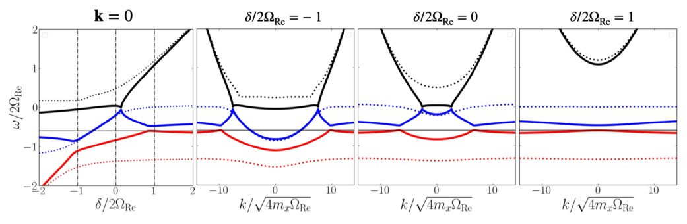
<figcaption class="paper-figure-caption"><b>Fig 4.</b> FIG. 4. Polaron polaritons as a function of detuning for a BEC density of 4πn↓/mx = 1.0. We employ γc/2ΩRe = 0.1, γx/2ΩRe = 1.7 and ΩIm/ΩRe = 0.1. The color coding is the same as in Fig. 2.</figcaption>
</figure>
</div>

<p><strong>Summary.</strong> This paper theoretically explores polaron-polaritons, quasiparticles formed by strongly correlated excitons coupled to photons. It demonstrates that incorporating dissipative light-matter coupling leads to the emergence of anomalous dispersion and exceptional points (EPs) in the system's spectrum. These EPs provide a tunable platform for studying non-Hermitian many-body physics.</p>
<p><strong>Why it may be interesting.</strong> This work is highly relevant for AMO physicists working on open quantum systems and quantum optics because it uses engineered dissipation (non-Hermiticity) to control fundamental spectral features like exceptional points in interacting many-body platforms.</p>
<details>
<summary>Detailed structure</summary>
<p><strong>Main problem.</strong> The study investigates how combining strong electronic correlations with dissipation affects collective quantum excitations, specifically focusing on polaron-polariton quasiparticles.</p>
<p><strong>Main result.</strong> The interplay between many-body correlations and non-Hermitian coupling generates anomalous dispersion relations and exceptional points (EPs) in the polaron-polariton spectrum. These EPs are tunable by the dissipative coupling strength and relative decay rates.</p>
<p><strong>Method.</strong> The analysis employs finite-temperature Green's function formalism, solving for the polariton spectrum via the determinant of the inverse Green's function matrix after analytic continuation.</p>
<p><strong>Model / system.</strong> The system models exciton-polaritons in semiconductors exhibiting strong interactions mediated by a biexciton resonance. The Hamiltonian includes non-interacting terms, light-matter coupling (coherent and dissipative), and two-body interaction terms.</p>
<p><strong>Key observables.</strong> Exceptional Points (EPs), anomalous dispersion relations, polaron-polariton branches ($E_{UP}/E_{LP}$), and level attraction.</p>
<p><strong>Important parameters / regimes.</strong> Dissipative coupling ($\Omega_{Im}$), relative decay rates ($\gamma_x, \gamma_c$), biexciton energy ($\epsilon_B$), and system density.</p>
<p><strong>Assumptions / limitations.</strong> The analysis uses the Rotating-Wave Approximation (RWA) and relies on approximations like the ladder approximation for self-energy calculation in some parts.</p>
<p><strong>Figures summary.</strong> Figures illustrate polaron branches vs. momentum/detuning, showing how increasing dissipative coupling causes curvature changes, negative mass effects, and the emergence of EPs; other figures map EP onset based on decay rates or BEC density.</p>
<p><strong>Paper structure.</strong> The paper progresses from defining the physical problem involving correlations and dissipation to deriving the full Hamiltonian and Green's function formalism. It then calculates the self-energy using pair propagators before analyzing the resulting spectrum, identifying EPs as key signatures of non-Hermitian physics.</p>
</details>
<details>
<summary>Abstract</summary>
<p>Understanding how strong correlations and dissipation combine to shape collective quantum excitations is a central challenge in many-body physics. We investigate the effect of dissipative light-matter coupling on strongly interacting exciton-polaritons in the presence of a biexciton resonance, which gives rise to polaron-polariton quasiparticles. We show that the interplay between many-body correlations and non-Hermitian coupling generates anomalous dispersion relations and exceptional points in the polaron-polariton spectrum. The location and coexistence of exceptional points are controlled by the dissipative coupling and the relative decay rates of the excitonic and photonic constituents, allowing them to emerge across different polaron-polariton branches. These results identify dissipative polaron-polaritons as a versatile platform for exploring non-Hermitian many-body physics with tunable light-matter quasiparticles.</p>
</details>
<p><sub><a href="#top">↑ back to top</a></sub></p>

<p><a id="paper-2607.00131"></a></p>
<h3 id="work-statistics-under-quantum-jump-and-quench-dynamics-in-monitored-ising-chains"><a href="http://arxiv.org/abs/2607.00131v1">Work Statistics Under Quantum-Jump and Quench Dynamics in Monitored Ising Chains</a></h3>
<p><strong>Authors:</strong> Manali Malakar, Alessandro Silva<br>
<strong>Type:</strong> theory · <strong>Category:</strong> statistical mechanics · <strong>PDF:</strong> <a href="https://arxiv.org/pdf/2607.00131v1">https://arxiv.org/pdf/2607.00131v1</a><br>
<strong>Analysis basis:</strong> full PDF text, analyzed in chunks
<strong>Topic relevance:</strong> 🔥 <code>measurement-induced transitions</code> <strong>5/5</strong> · 🔥 <code>non-equilibrium dynamics</code> <strong>4/5</strong> · 🔥 <code>quantum measurements</code> <strong>4/5</strong> · <code>methods for driven-dissipative</code> <strong>3/5</strong> · <code>non-equilibrium universality</code> <strong>3/5</strong> · <code>Keldysh / 2PI / non-Gaussian methods</code> <strong>1/5</strong> · <code>correlated / nonlocal dissipation</code> <strong>1/5</strong> · <code>driven-dissipative phase transition</code> <strong>1/5</strong></p>
<div class="figure-strip-hint">↔ Scroll figures horizontally</div>
<div class="paper-figures-scroll">
<figure class="paper-figure-card">
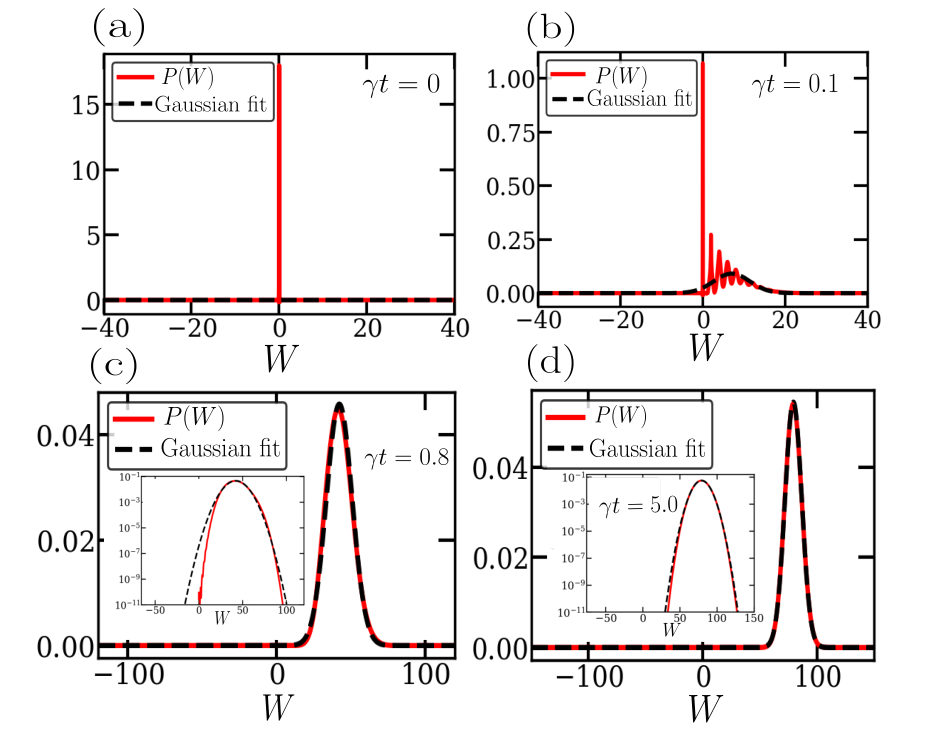
<figcaption class="paper-figure-caption"><b>Fig 1.</b> FIG. 1. Work distribution P(W) under stochastic quantum-jump dynamics in a monitored transverse-field Ising chain without quench (Hi = Hf), for system size L = 80, transverse field h = 0.4, averaged over 200 stochastic realizations. Solid red lines show the numerically constructed P(W) and black dashed curves are Gaussian fits with the same mean and variance. (a) No monitoring (γt = 0): the characteristic function reduces to G(u) = 1 and the work distribution collapses to a single delta peak P(W) = δ(W) at W = 0. (b) Weak monitoring (γt = 0.1): rare jumps create a comb of narrow side peaks at W &gt; 0 on top of the dominant W = 0 peak, reflecting discrete excitation pathways and residual...</figcaption>
</figure>
<figure class="paper-figure-card">

<figcaption class="paper-figure-caption"><b>Fig 2.</b> FIG. 2. Variation of the tail deviation D(2σ) tail with the cumulative monitoring strength γt at transverse field h = 0.6. The decrease of D(2σ) tail indicates that the work distribution P(W) approaches its Gaussian reference PG(W) as monitoring becomes stronger, con- sistent with the behavior shown in Fig. 1. Parameters: L = 60, averaged over 500 stochastic realizations.</figcaption>
</figure>
<figure class="paper-figure-card">
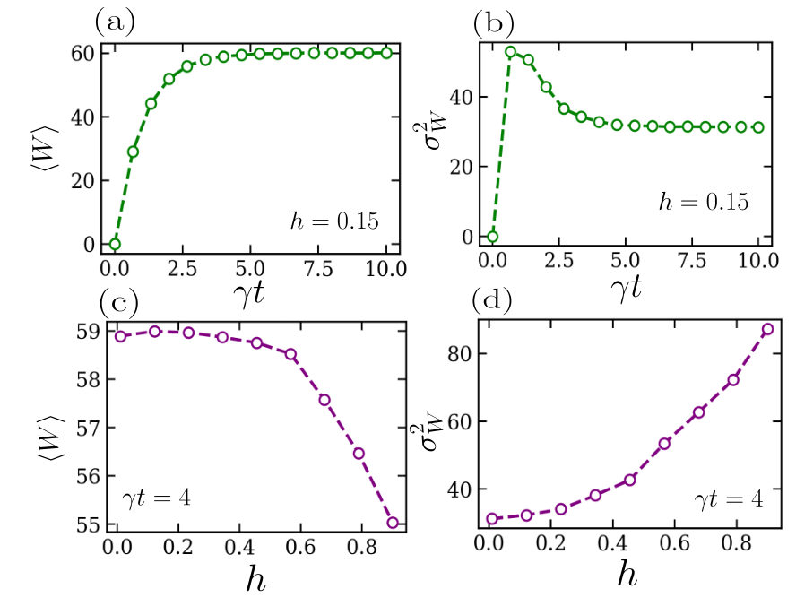
<figcaption class="paper-figure-caption"><b>Fig 3.</b> FIG. 3. Work cumulants under stochastic jump dynamics with no quench, Hi = Hf, for a system size L = 60, averaged over 500 stochastic realizations. (a) Mean work ⟨W⟩as a function of the cumulative monitoring strength γt at fixed transverse field h = 0.15. (b) Corresponding work variance σ2 W . The mean work increases rapidly and then saturates, whereas the variance shows a pronounced maximum before relaxing to a plateau. (c) Mean work as a function of the transverse field h at fixed γt = 4. The mean work varies only weakly at small and intermediate h, and decreases at larger h. (d) Corresponding work variance, showing that increasing h broadens the distribution of final-energy outcomes even...</figcaption>
</figure>
<figure class="paper-figure-card">
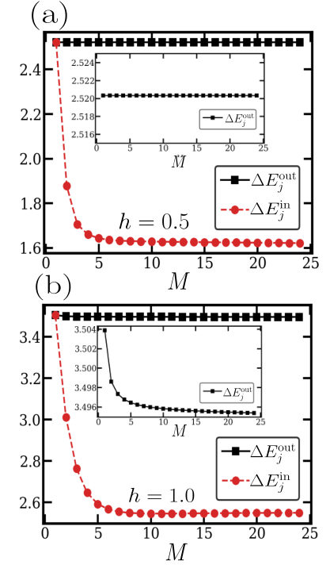
<figcaption class="paper-figure-caption"><b>Fig 4.</b> FIG. 4. Per-jump energy increment ∆Ej as a function of jump in- dex j for system size L = 1024. (a) In the gapped ferromagnetic phase at h = 0.5, ∆Eout j remains strictly constant with respect to j, while ∆Ein j drops at early j and then saturates. Inset: zoomed view of ∆Eout j confirming its j-independence. (b) At the critical point h = 1.0, algebraic correlations render even the outside-cone ∆Eout j weakly j-dependent, as revealed in the inset, whereas the inside-cone ∆Ein j still decays and saturates but more slowly.</figcaption>
</figure>
<figure class="paper-figure-card">

<figcaption class="paper-figure-caption"><b>Fig 5.</b> FIG. 5. Work distribution P(W) in the controlled jump protocol with equally spaced jumps in space and time, illustrating the progression toward Gaussianity with increasing number of jumps M for system size L = 300, h = 0.2, and total time t = 1. (a) For M = 2, P(W) displays a dominant central peak at W = 0 indicative of minimal energy injection, accompanied by multiple discrete peaks at W &gt; 0, reflecting a small set of coherent excitations and preserved coherences. (b) For M = 20, the distribution develops a bell-shaped core but retains residual spikes from incomplete dephasing. (c) For M = 50, P(W) achieves a fully smooth profile that closely overlaps with the Gaussian fit with the same...</figcaption>
</figure>
</div>

<p><strong>Summary.</strong> The paper analyzes how monitoring and quantum jumps affect the statistics of work done on an Ising chain. It shows that frequent measurements drive the work distribution toward a Gaussian shape, regardless of initial quench structure. This provides a powerful tool for understanding energy dissipation and fluctuation theorems in measurement-driven many-body dynamics.</p>
<p><strong>Why it may be interesting.</strong> This work provides a detailed quantitative framework connecting measurement backaction (monitoring) directly to the statistical properties of energy exchange, offering insights into non-equilibrium thermodynamics in open quantum systems.</p>
<details>
<summary>Detailed structure</summary>
<p><strong>Main problem.</strong> The study investigates how work statistics evolve in monitored quantum systems subjected to both quantum quenches and stochastic measurement processes.</p>
<p><strong>Main result.</strong> Work distributions transition from discrete, comb-like structures (under weak monitoring) towards an essentially Gaussian form as the number of measurements or monitoring strength increases, consistent with Central Limit Theorem behavior.</p>
<p><strong>Method.</strong> The analysis employs a trajectory-resolved generating function derived for generalized measurements and evaluates it using a fermionic Gaussian-state formalism.</p>
<p><strong>Model / system.</strong> The model is a transverse-field Ising chain ($\hat{H}_{QI}$), whose dynamics are governed by stochastic quantum jumps or continuous monitoring, allowing the study of non-equilibrium work extraction.</p>
<p><strong>Key observables.</strong> Work distribution $P(W)$, work generating function $G(u)$, mean work $\langle W 
angle$, and variance $\sigma^2_W$.</p>
<p><strong>Important parameters / regimes.</strong> Monitoring strength ($\gamma_t$), number of jumps ($M$), and the quench field strength ($h_f$).</p>
<p><strong>Assumptions / limitations.</strong> The analysis relies on the Central Limit Theorem (CLT) mechanism dominating at large measurement rates, causing higher cumulants to be suppressed.</p>
<p><strong>Figures summary.</strong> Figures illustrate the crossover of $P(W)$ from multi-peaked/comb-like structures towards Gaussianity as monitoring strength or jump number increases; they also contrast work statistics under controlled jumps inside versus outside the light cone.</p>
<p><strong>Paper structure.</strong> The paper systematically analyzes work statistics by first deriving the generating function for general measurements, then applying it to stochastic jump dynamics (showing crossover), followed by analyzing deterministic controlled jumps (highlighting causality/light-cone effects), and finally examining monitored quenches.</p>
</details>
<details>
<summary>Abstract</summary>
<p>We investigate work statistics in monitored transverse-field Ising chains subject to both a quantum quench of the transverse field and either stochastic quantum jumps or controlled measurement sequences. For generalized measurements, we derive a trajectory-resolved generating function for work statistics in the two-point energy measurement scheme. Evaluating it using a fermionic Gaussian-state formalism, we show that, under stochastic jump dynamics, the work distribution crosses over from a comb-like structure to an essentially Gaussian form with shrinking sub-Gaussian tails, as the number of detection events grows. For controlled jump protocols, the energy added by each jump is constant when successive jumps are causally disconnected but decreases and then saturates when they lie within each other's light cone, yielding linear and sublinear growth of the average work, respectively. For monitored quenches, continuous observation washes out the fine structure of the isolated-quench distribution and again drives the statistics toward Gaussian behavior.</p>
</details>
<p><sub><a href="#top">↑ back to top</a></sub></p>

<p><a id="paper-2607.00702"></a></p>
<h3 id="weak-coupling-tensor-cross-interpolation-impurity-solver-for-nonequilibrium-dynamical-mean-field-theory"><a href="http://arxiv.org/abs/2607.00702v1">Weak-coupling tensor cross interpolation impurity solver for nonequilibrium dynamical mean-field theory</a></h3>
<p><strong>Authors:</strong> Shuta Matsuura, Hiroshi Shinaoka, Philipp Werner, Naoto Tsuji<br>
<strong>Type:</strong> theory · <strong>Category:</strong> strongly correlated electrons · <strong>PDF:</strong> <a href="https://arxiv.org/pdf/2607.00702v1">https://arxiv.org/pdf/2607.00702v1</a><br>
<strong>Analysis basis:</strong> full PDF text, analyzed in chunks
<strong>Topic relevance:</strong> 🔥 <code>Keldysh / 2PI / non-Gaussian methods</code> <strong>5/5</strong> · 🔥 <code>non-equilibrium dynamics</code> <strong>4/5</strong> · <code>Kondo &amp; dissipative impurity</code> <strong>3/5</strong> · <code>methods for driven-dissipative</code> <strong>3/5</strong> · <code>non-equilibrium universality</code> <strong>2/5</strong> · <code>analog quantum simulation</code> <strong>1/5</strong> · <code>correlated / nonlocal dissipation</code> <strong>1/5</strong> · <code>driven-dissipative phase transition</code> <strong>1/5</strong></p>
<div class="figure-strip-hint">↔ Scroll figures horizontally</div>
<div class="paper-figures-scroll">
<figure class="paper-figure-card">
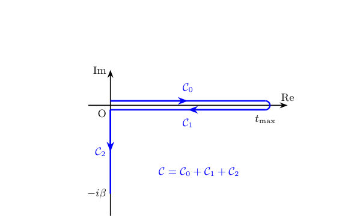
<figcaption class="paper-figure-caption"><b>Fig 1.</b> FIG. 1. L-shaped contour C that consists of three branches: the forward real-time branch C0, the backward real-time branch C1, and the imaginary-time branch C2.</figcaption>
</figure>
<figure class="paper-figure-card">

<figcaption class="paper-figure-caption"><b>Fig 2.</b> FIG. 2. The definition of the variables u1, · · · , un+1. In this illustration, we take n = 4 and k = 2 with (s1, s2, s3, s4) = (0, 1, 1, 0).</figcaption>
</figure>
<figure class="paper-figure-card">
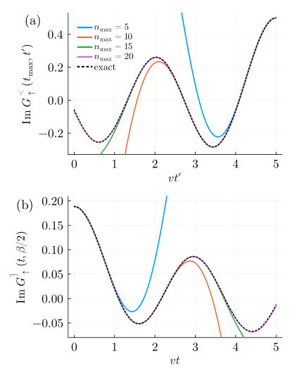
<figcaption class="paper-figure-caption"><b>Fig 3.</b> FIG. 3. Results obtained with the weak-coupling nonequilib- rium TCI impurity solver for the impurity model (7) with ∆↓(z, z′) = 0 and ∆R ↑(t, t′), ∆⌉ ↑(t, τ ′), ∆&lt; ↑(t, t′) given by Eq. (61). We set δµ = 0 (particle-hole symmetric system). The one-dimensional cuts of (a) Im G&lt; ↑(t, t′) at t = tmax and</figcaption>
</figure>
<figure class="paper-figure-card">
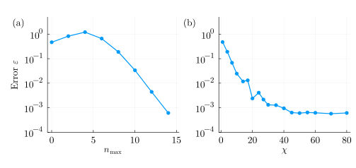
<figcaption class="paper-figure-caption"><b>Fig 4.</b> FIG. 4. Convergence of the error of the lesser Green’s function with respect to (a) the maximum order nmax and (b) the bond dimension χ for the exactly solvable impurity model (Eq. (7) with ∆↓(z, z′) = 0) with particle-hole symmetry (δµ = 0). The parameters are β = 5/v, U = 3v, tmax = 3/v and α = 0.5. In panel (a), the maximum bond dimension is fixed to χ = 80, and in panel (b), the maximum order is fixed to nmax = 14.</figcaption>
</figure>
<figure class="paper-figure-card">
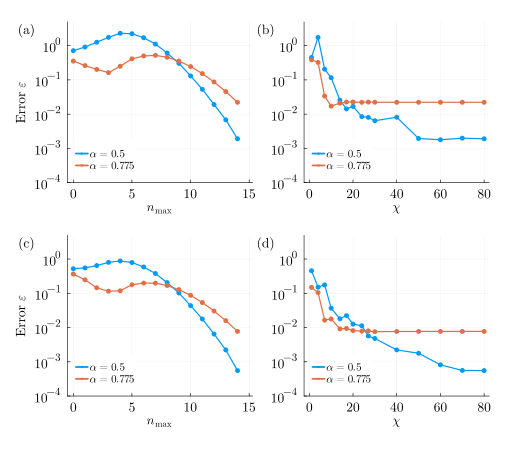
<figcaption class="paper-figure-caption"><b>Fig 5.</b> FIG. 6. Convergence of the error of (a,b) the lesser Green’s function and (c,d) the greater Green’s function for the exactly solvable impurity model (Eq. (7) with ∆↓(z, z′) = 0) without particle-hole symmetry (δµ = 0.825v). In panels (a,c), the error is plotted as a function of the maximum order nmax, and in panels (b,d), the error is plotted as a function of the maximum bond dimension χ. The parameters are β = 5/v, U = 3v, and tmax = 3/v. In panels (a,c), the bond dimension is fixed to χ = 80, and in panels (b,d), the maximum order is fixed to nmax = 14.</figcaption>
</figure>
</div>

<p><strong>Summary.</strong> This paper introduces a novel impurity solver for nonequilibrium Dynamical Mean-Field Theory (DMFT) by combining a weak-coupling expansion with Tensor Cross Interpolation (TCI). This technique efficiently handles high-dimensional integrals on the Keldysh contour, circumventing the sign problem that plagues standard Monte Carlo methods. It allows accurate simulation of quantum quenches in correlated models like the Hubbard model.</p>
<p><strong>Why it may be interesting.</strong> The development of a robust, non-stochastic solver for nonequilibrium DMFT is crucial for studying open quantum systems driven far from equilibrium, bridging the gap between weak-coupling perturbation theory and complex time evolution simulations.</p>
<details>
<summary>Detailed structure</summary>
<p><strong>Main problem.</strong> Simulating nonequilibrium quantum many-body systems, which suffer from exponential computational complexity with real time.</p>
<p><strong>Main result.</strong> The developed TCI solver successfully implements an impurity solver for nonequilibrium DMFT, accurately reproducing thermalization dynamics and remaining controlled away from the sign problem region.</p>
<p><strong>Method.</strong> It combines a weak-coupling expansion with the Tensor Cross Interpolation (TCI) algorithm to efficiently evaluate high-dimensional integrals arising in the Keldysh formalism without stochastic sampling.</p>
<p><strong>Model / system.</strong> The method is applied to nonequilibrium dynamics in strongly correlated electron systems, specifically using the mass-imbalanced Hubbard model on a lattice structure within the framework of Dynamical Mean-Field Theory (DMFT).</p>
<p><strong>Key observables.</strong> Nonequilibrium Green's functions ($G_\sigma(z, z')$), spectral functions, and thermalization behavior.</p>
<p><strong>Important parameters / regimes.</strong> Interaction strength ($U$), filling fraction ($\delta\mu$), maximum simulation time ($t_{max}$), and the weak-coupling expansion order ($n_{max}$).</p>
<p><strong>Assumptions / limitations.</strong> The method relies on approximating high-dimensional integrals using a tensor-train decomposition (TCI) and assumes sufficient smoothness for extrapolation across the Keldysh contour.</p>
<p><strong>Figures summary.</strong> Figures illustrate the L-shaped Kadanoff–Baym contour, convergence of TCI results with increasing order ($n_{max}$), and phase diagrams showing solver performance across different coupling regimes.</p>
<p><strong>Paper structure.</strong> The paper builds from defining the complex Green's function formalism on the Keldysh contour to implementing the weak-coupling expansion. It details the use of TCI for integral evaluation, applies this to both transient dynamics (quenches) and steady states, and concludes with benchmarking against known limits.</p>
</details>
<details>
<summary>Abstract</summary>
<p>Simulating nonequilibrium quantum many-body systems remains a major challenge due to the exponential growth of the computational complexity with real time. Here we implement a nonequilibrium impurity solver based on the weak-coupling expansion and the tensor cross interpolation (TCI), and apply it to nonequilibrium dynamical mean-field theory (DMFT). The method approximates the integrands of the high-dimensional integrals arising in the weak-coupling expansion in a tensor-train form, enabling efficient evaluations without stochastic sampling and thereby mitigating the sign problem affecting continuous-time quantum Monte Carlo (CT-QMC) methods. Benchmark calculations for an exactly solvable nonequilibrium impurity model agree well with the exact results and reveal a low-rank structure of the integrands. When applied to interaction-quench problems in the half-filled Hubbard model, the method reproduces fast thermalization at a critical interaction strength with accuracy comparable to CT-QMC. Away from half filling, where the sign problem becomes even more severe, the present approach remains well controlled, revealing a crossover instead of a sharply defined fast thermalization point in the 3/4-filled case. The solver can also be applied to steady-state DMFT problems, yielding accurate spectral functions in the metallic regime without analytic continuation.</p>
</details>
<p><sub><a href="#top">↑ back to top</a></sub></p>

<p><a id="paper-2607.01158"></a></p>
<h3 id="continuous-observation-of-quantum-systems"><a href="http://arxiv.org/abs/2607.01158v1">Continuous Observation of Quantum Systems</a></h3>
<p><strong>Authors:</strong> Hans Maassen<br>
<strong>Type:</strong> theory · <strong>Category:</strong> other · <strong>PDF:</strong> <a href="https://arxiv.org/pdf/2607.01158v1">https://arxiv.org/pdf/2607.01158v1</a><br>
<strong>Analysis basis:</strong> full PDF text, analyzed in chunks
<strong>Topic relevance:</strong> 🔥 <code>quantum measurements</code> <strong>5/5</strong> · <code>measurement-induced transitions</code> <strong>3/5</strong> · <code>methods for driven-dissipative</code> <strong>3/5</strong> · <code>correlated / nonlocal dissipation</code> <strong>2/5</strong> · <code>Keldysh / 2PI / non-Gaussian methods</code> <strong>1/5</strong> · <code>driven-dissipative phase transition</code> <strong>1/5</strong> · <code>non-equilibrium dynamics</code> <strong>1/5</strong></p>
<div class="figure-strip-hint">↔ Scroll figures horizontally</div>
<div class="paper-figures-scroll">
<figure class="paper-figure-card">
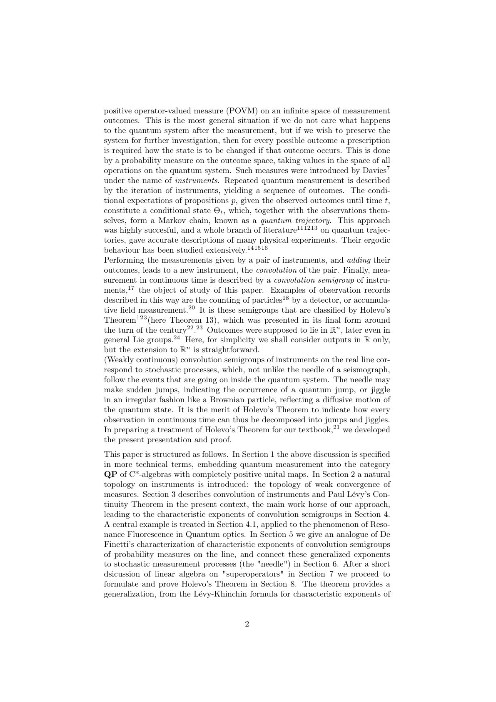
<figcaption class="paper-figure-caption"><b>Fig 1.</b> Low-resolution page preview, page 2</figcaption>
</figure>
<figure class="paper-figure-card">
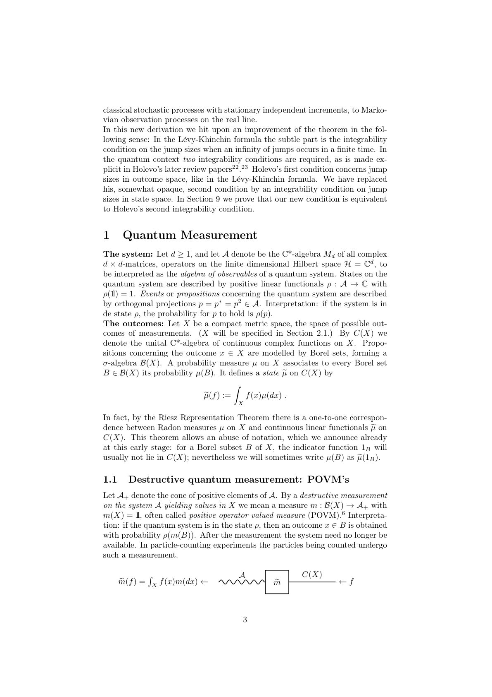
<figcaption class="paper-figure-caption"><b>Fig 2.</b> Low-resolution page preview, page 3</figcaption>
</figure>
<figure class="paper-figure-card">
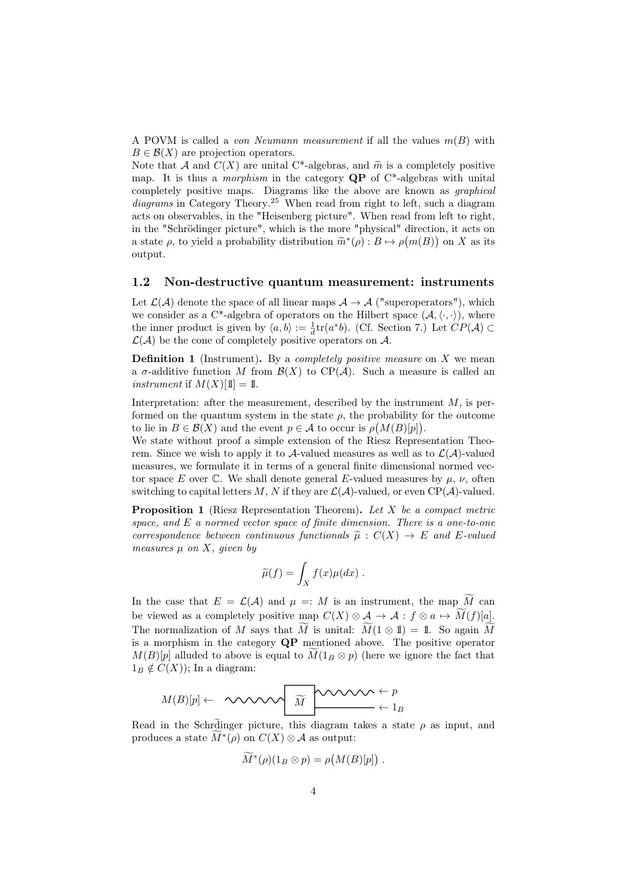
<figcaption class="paper-figure-caption"><b>Fig 3.</b> Low-resolution page preview, page 4</figcaption>
</figure>
<figure class="paper-figure-card">
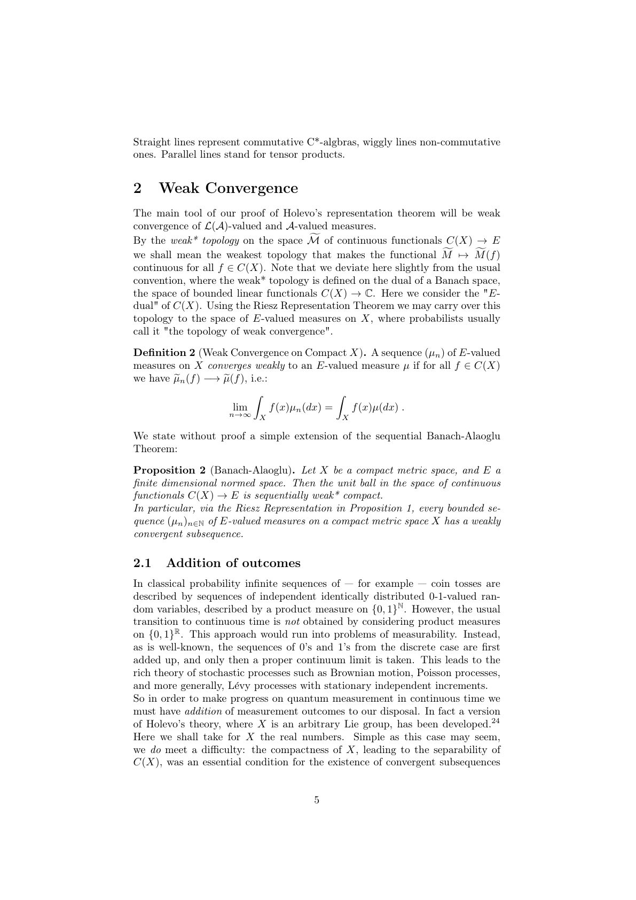
<figcaption class="paper-figure-caption"><b>Fig 4.</b> Low-resolution page preview, page 5</figcaption>
</figure>
<figure class="paper-figure-card">
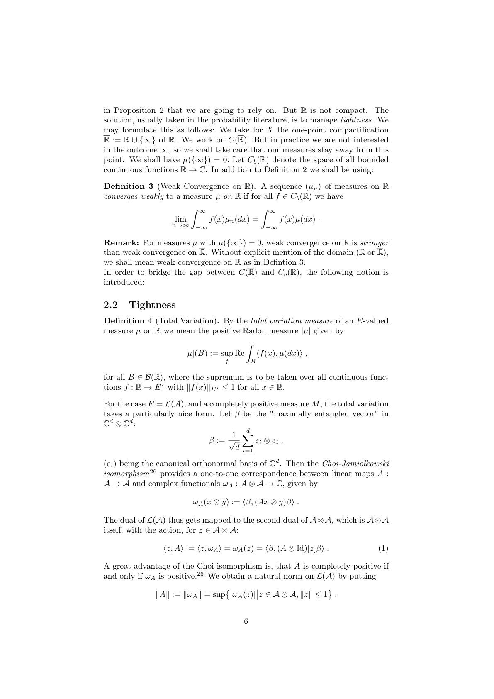
<figcaption class="paper-figure-caption"><b>Fig 5.</b> Low-resolution page preview, page 6</figcaption>
</figure>
</div>

<p><strong>Summary.</strong> This paper rigorously develops the mathematical theory behind continuous quantum measurement by classifying the generators of associated evolution semigroups. It extends classical stochastic process theorems to the quantum domain using weak convergence and characteristic functions. The result provides a fundamental decomposition theorem for these generators, linking them to specific physical processes like diffusion and discrete jumps.</p>
<p><strong>Why it may be interesting.</strong> This work provides a rigorous mathematical foundation for understanding quantum measurement in continuous time. The decomposition of the generator $L$ into distinct physical components (diffusion vs. jumps) is crucial for modeling realistic open quantum systems, especially those involving photon counting or dissipation.</p>
<details>
<summary>Detailed structure</summary>
<p><strong>Main problem.</strong> The paper develops an alternative, probabilistic proof for Holevo's classification theorem concerning continuous quantum measurement processes (stationary quantum trajectories). It aims to characterize the generators of these observation semigroups.</p>
<p><strong>Main result.</strong> It establishes that any generator $L$ arising from a weakly continuous semigroup of instruments must decompose into four components: shift, free evolution, diffusive, and jump terms. Furthermore, it proves key equivalences linking operator algebra conditions to integral conditions on associated measures.</p>
<p><strong>Method.</strong> The proof heavily relies on advanced functional analysis tools, including weak convergence of measures (especially for non-compact spaces like $\mathbb{R}$), Lévy's Continuity Theorem, and the characterization of convolution semigroups via characteristic exponents.</p>
<p><strong>Model / system.</strong> The system is a quantum system described by observables in a $C^*$-algebra $A$ on a finite-dimensional Hilbert space. The dynamics are governed by continuous observation processes modeled mathematically by convolution semigroups of instruments $\{M_t\}_{t\ge 0}$.</p>
<p><strong>Key observables.</strong> The characteristic exponent $L(\omega)$ and the associated path space measure $\mathcal{M}_T$ are key diagnostics. Specific components include the jump measure $J$, the diffusive term, and the Lindblad generator structure.</p>
<p><strong>Important parameters / regimes.</strong> Time $t \ge 0$, outcome space $X$ (simplified to $\mathbb{R}$), and parameters defining the generators ($\alpha, \sigma, b$).</p>
<p><strong>Assumptions / limitations.</strong> The primary mathematical tools assume weak convergence of measures and rely on extending classical Lévy-Khinchin formulas to the quantum instrument framework. The analysis often simplifies by assuming $X=\mathbb{R}$.</p>
<p><strong>Figures summary.</strong> Not specified in the notes.</p>
<p><strong>Paper structure.</strong> The paper progresses logically: first, establishing weak convergence tools for measures on $\mathbb{R}$ (Chunk 2); second, characterizing weakly continuous semigroups via their generators $L(\omega)$ and relating them to basic Davies generators (Chunks 3 &amp; 4); third, decomposing the general generator $L$ into its four constituent parts using measure theory (Chunks 5 &amp; 6); and finally, proving key equivalences between different mathematical conditions defining these processes (Chunk 7).</p>
</details>
<details>
<summary>Abstract</summary>
<p>In a series of papers in the 1980's Alexander Holevo proved a classification theorem for continuous quantum measurement processes, or, as they would today be called, stationary quantum trajectories in continuous time. His main tools were functional analytic in character: starting from a Bochner-type inequality he employed dilation techniques for positive definite kernels. Here we give an alternative, more probabilistic proof: we use weak convergence of measures and employ Levy's Continuity Theorem. We clarify the boundedness conditions in Holevo's theorem, and supply a simple example from quantum optics.</p>
</details>
<p><sub><a href="#top">↑ back to top</a></sub></p>

<p><a id="paper-2607.00198"></a></p>
<h3 id="wavefunctions-localization-and-the-wigners-friend-paradox-in-a-framework-of-discrete-space-hypothesis"><a href="http://arxiv.org/abs/2607.00198v1">Wavefunctions localization, and the Wigner's Friend Paradox in a Framework of Discrete-Space Hypothesis</a></h3>
<p><strong>Authors:</strong> W. A. Zúñiga-Galindo<br>
<strong>Type:</strong> theory · <strong>Category:</strong> other · <strong>PDF:</strong> <a href="https://arxiv.org/pdf/2607.00198v1">https://arxiv.org/pdf/2607.00198v1</a><br>
<strong>Analysis basis:</strong> full PDF text, analyzed in chunks
<strong>Topic relevance:</strong> 🔥 <code>quantum measurements</code> <strong>5/5</strong> · 🔥 <code>measurement-induced transitions</code> <strong>4/5</strong></p>
<div class="figure-strip-hint">↔ Scroll figures horizontally</div>
<div class="paper-figures-scroll">
<figure class="paper-figure-card">

<figcaption class="paper-figure-caption"><b>Fig 1.</b> Low-resolution page preview, page 2</figcaption>
</figure>
<figure class="paper-figure-card">
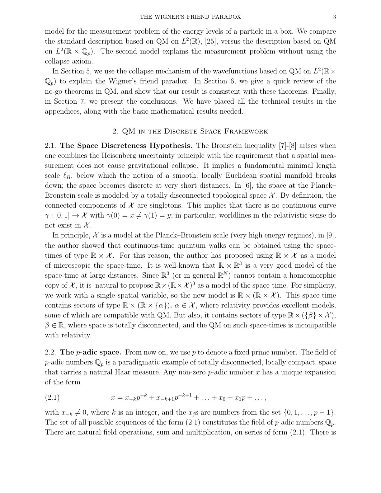
<figcaption class="paper-figure-caption"><b>Fig 2.</b> Low-resolution page preview, page 3</figcaption>
</figure>
<figure class="paper-figure-card">

<figcaption class="paper-figure-caption"><b>Fig 3.</b> Low-resolution page preview, page 4</figcaption>
</figure>
<figure class="paper-figure-card">
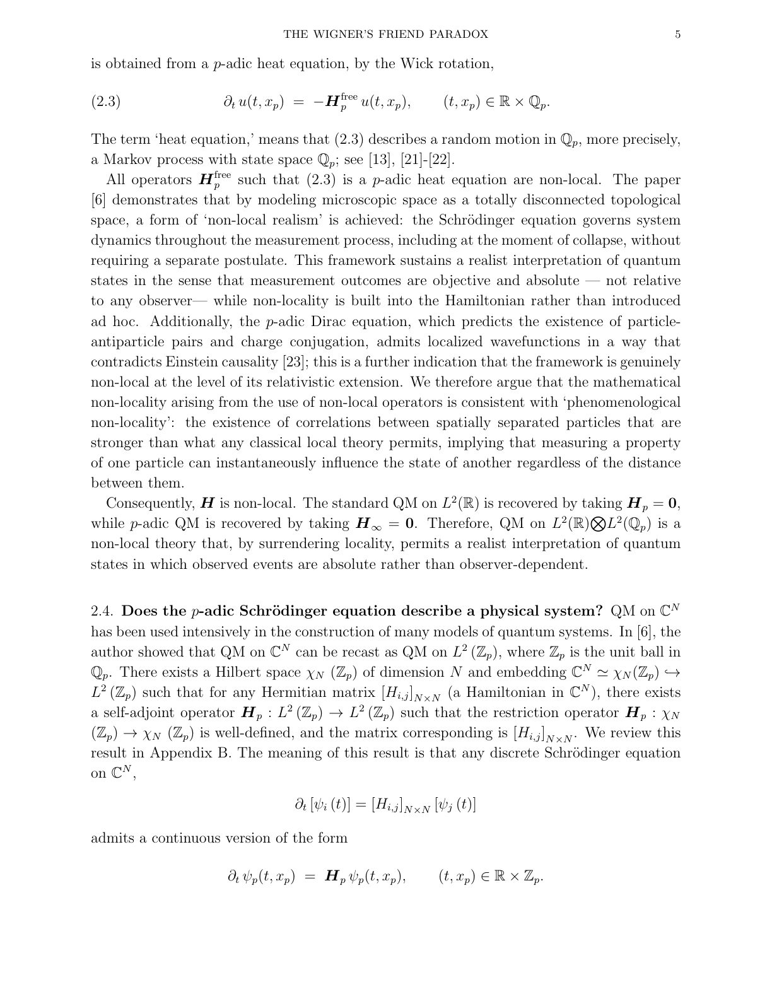
<figcaption class="paper-figure-caption"><b>Fig 4.</b> Low-resolution page preview, page 5</figcaption>
</figure>
<figure class="paper-figure-card">
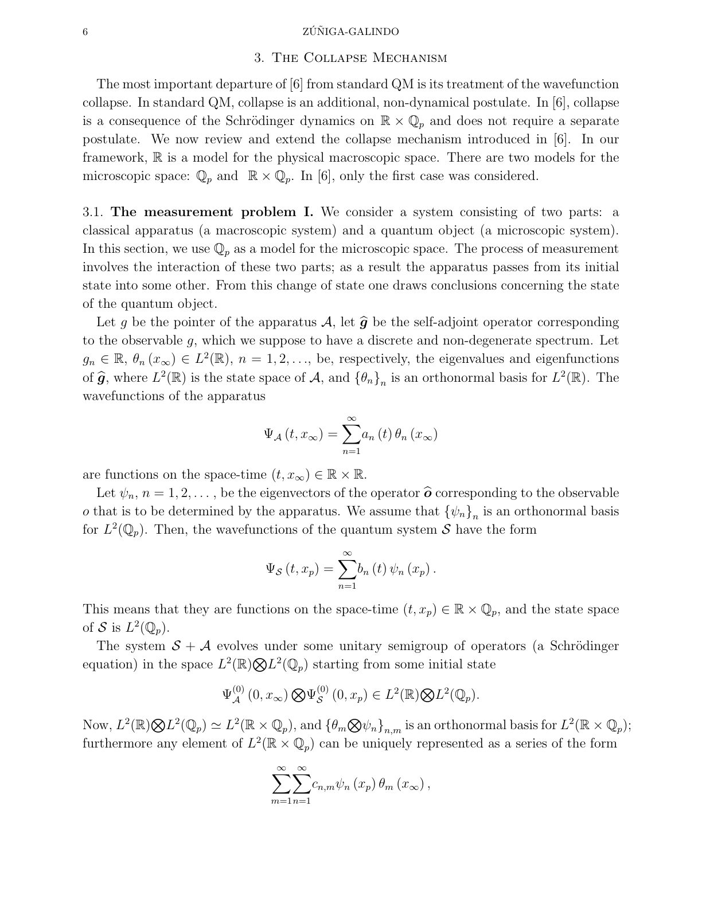
<figcaption class="paper-figure-caption"><b>Fig 5.</b> Low-resolution page preview, page 6</figcaption>
</figure>
</div>

<p><strong>Summary.</strong> This paper resolves the Wigner's Friend paradox by proposing that wavefunction collapse is a dynamical outcome of the Schrödinger equation when quantum mechanics is formulated on a hybrid space combining continuous ($\mathbb{R}$) and discrete ($p$-adic, $\mathbb{Q}_p$) dimensions. By modeling observers as classical apparatuses, it shows that definite measurement outcomes are absolute features of the dynamics, thus bypassing observer-dependent paradoxes.</p>
<p><strong>Why it may be interesting.</strong> This work tackles foundational issues in quantum measurement theory (the measurement problem) using advanced mathematical structures ($\mathbb{Q}_p$), which is highly relevant for theoretical physicists exploring the foundations of QM beyond standard continuous models.</p>
<details>
<summary>Detailed structure</summary>
<p><strong>Main problem.</strong> The paper aims to resolve the Wigner's Friend paradox by providing a quantum mechanical framework that eliminates observer-dependent assumptions.</p>
<p><strong>Main result.</strong> It demonstrates that wavefunction collapse is a dynamical consequence of the Schrödinger equation on a hybrid space, leading to definite readings for all observers without requiring conscious agents or information exchange.</p>
<p><strong>Method.</strong> The authors construct a theory using Quantum Mechanics formulated on the product space $\mathbb{R} \times \mathbb{Q}_p$, where $\mathbb{Q}_p$ models discrete microscopic space.</p>
<p><strong>Model / system.</strong> The system is modeled by quantum mechanics evolving on $L^2(\mathbb{R} \times \mathbb{Q}_p)$, incorporating non-local Hamiltonians. The paradox is tested using toy models of particle measurement in both continuous and p-adic spaces.</p>
<p><strong>Key observables.</strong> Wavefunction localization onto compact supports during measurement interactions, leading to definite pointer readings.</p>
<p><strong>Important parameters / regimes.</strong> The structure of the $p$-adic numbers ($\mathbb{Q}_p$) at the Planck-Bronstein scale; non-locality vs. locality trade-off.</p>
<p><strong>Assumptions / limitations.</strong> The core assumption is that space at short distances is fundamentally discrete, modeled by $\mathbb{Q}_p$, and collapse emerges dynamically from the Schrödinger equation rather than being an independent postulate.</p>
<p><strong>Paper structure.</strong> The paper introduces the hybrid space model, develops the dynamical mechanism for wavefunction localization via non-local Hamiltonians, applies this to resolve Wigner's Friend paradox by showing sequential, independent collapses, and concludes by demonstrating consistency with existing no-go theorems.</p>
</details>
<details>
<summary>Abstract</summary>
<p>We present a resolution of the Wigner's Friend paradox within a framework of quantum mechanics (QM) on the hybrid space RxQ_{p}, where Q_{p} denotes the field of p-adic numbers, regarded as a model of discrete microscopic space at the Planck-Bronstein scale. In this framework, wavefunction collapse is not an independent postulate but a dynamical consequence of the Schrödinger equation with non-local Hamiltonians: wavefunctions localize onto compact supports during measurement interactions, producing definite pointer readings without the intervention of observers or the exchange of information between subsystems. We model both Wigner and his Friend as classical apparatuses and show that each produces a definite reading through independent applications of the collapse mechanism, thereby eliminating the conflict between their descriptions of reality. The framework is consistent with the principal no-go theorems in finite- and infinite-dimensional Hilbert spaces associated with extended Wigner's Friend scenarios -- including those of Frauchiger-Renner, Brukner, Bong et al., and Guérin et al. -- since it requires no agents capable of recording or reasoning about outcomes, thereby vacating the observer-dependent assumptions that drive those theorems. We illustrate the collapse mechanism explicitly through a toy model of a particle in a box, comparing the standard description with the new one. The non-locality intrinsic to QM on L2(RxQ_{p}) permits realism at the cost of locality, and the Absoluteness of Observed Events holds in our framework without requiring observer independence.</p>
</details>
<p><sub><a href="#top">↑ back to top</a></sub></p>

<p><a id="paper-2607.00307"></a></p>
<h3 id="coupling-effect-of-nearest-neighbor-interacting-qubit-chains-to-a-single-qubit-system"><a href="http://arxiv.org/abs/2607.00307v1">Coupling effect of nearest-neighbor interacting qubit chains to a single qubit system</a></h3>
<p><strong>Authors:</strong> Manuel Allan L. Orongan, Lemuel John F. Sese, Rayda P. Gammag<br>
<strong>Type:</strong> theory · <strong>Category:</strong> statistical mechanics · <strong>PDF:</strong> <a href="https://arxiv.org/pdf/2607.00307v1">https://arxiv.org/pdf/2607.00307v1</a><br>
<strong>Analysis basis:</strong> full PDF text, analyzed in chunks
<strong>Topic relevance:</strong> 🔥 <code>entanglement &amp; information structure</code> <strong>4/5</strong> · <code>analog quantum simulation</code> <strong>3/5</strong> · <code>correlated / nonlocal dissipation</code> <strong>3/5</strong> · <code>methods for driven-dissipative</code> <strong>3/5</strong> · <code>non-equilibrium dynamics</code> <strong>3/5</strong> · <code>Keldysh / 2PI / non-Gaussian methods</code> <strong>2/5</strong> · <code>Tavis-Cummings &amp; cavity-many-emitter</code> <strong>2/5</strong> · <code>driven-dissipative phase transition</code> <strong>2/5</strong> · <code>non-equilibrium universality</code> <strong>2/5</strong> · <code>Kondo &amp; dissipative impurity</code> <strong>1/5</strong> · <code>Rydberg arrays</code> <strong>1/5</strong> · <code>correlated cavity matter</code> <strong>1/5</strong> · <code>exotic spin models in light-matter</code> <strong>1/5</strong> · <code>measurement-induced transitions</code> <strong>1/5</strong> · <code>scars &amp; prethermalization</code> <strong>1/5</strong></p>
<div class="figure-strip-hint">↔ Scroll figures horizontally</div>
<div class="paper-figures-scroll">
<figure class="paper-figure-card">

<figcaption class="paper-figure-caption"><b>Fig 1.</b> FIG. 1: An open quantum system with the local system S and environment E.</figcaption>
</figure>
<figure class="paper-figure-card">

<figcaption class="paper-figure-caption"><b>Fig 2.</b> FIG. 2: A central qubit (blue) interacting with M Ising chains (gray), each consisting of N</figcaption>
</figure>
<figure class="paper-figure-card">
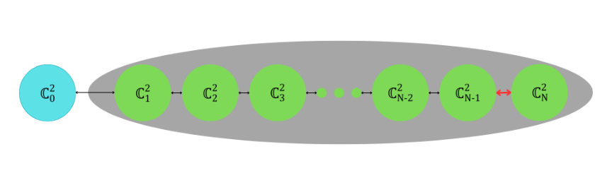
<figcaption class="paper-figure-caption"><b>Fig 3.</b> FIG. 3: A central qubit (blue) interacting with the first qubit of an N qubit Ising chain</figcaption>
</figure>
<figure class="paper-figure-card">
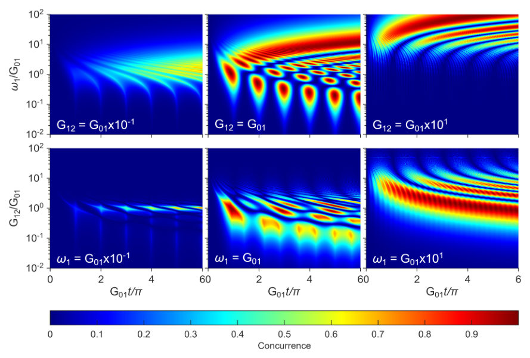
<figcaption class="paper-figure-caption"><b>Fig 4.</b> FIG. 4: Time-evolution of concurrence under varying strength of transverse magnetic field</figcaption>
</figure>
</div>

<p><strong>Summary.</strong> This paper develops a theorem defining when certain parts of a system's Hamiltonian are inert regarding local dynamics. By testing this theorem against various qubit chain models, the authors show that violating the required commutation relations allows for an 'emergent coupling.' This emergent coupling can generate measurable entanglement between subsystems that do not interact directly in the original Hamiltonian.</p>
<p><strong>Why it may be interesting.</strong> This work provides deep insight into how seemingly irrelevant Hamiltonian terms can become dynamically relevant through non-commuting interactions, which is crucial for understanding decoherence and information flow in complex quantum systems.</p>
<details>
<summary>Detailed structure</summary>
<p><strong>Main problem.</strong> The study aims to establish a rigorous theorem identifying Hamiltonian terms that do not influence local dynamics or observables, while also exploring cases where this assumption breaks down.</p>
<p><strong>Main result.</strong> The authors demonstrate that when specific commutation relations are violated (e.g., by applying a transverse field), non-local interactions can generate an 'emergent coupling' leading to measurable entanglement between previously uncoupled subsystems.</p>
<p><strong>Method.</strong> The analysis involves deriving the reduced density matrix using partial tracing over environment degrees of freedom, comparing results derived under strict commutation conditions versus those where they fail.</p>
<p><strong>Model / system.</strong> The models involve coupled qubit chains (Ising interactions) interacting with a central local qubit. The system is analyzed by varying coupling strengths and external fields to test the limits of the theoretical theorem.</p>
<p><strong>Key observables.</strong> Reduced density matrix ($\hat{
ho}_0(t)$), Concurrence ($C(\hat{
ho}_{02})$) for entanglement measurement.</p>
<p><strong>Important parameters / regimes.</strong> Transverse magnetic field strength ($\omega_1$), coupling strengths ($G_{ij}$), and the ratio of these parameters relative to each other.</p>
<p><strong>Assumptions / limitations.</strong> The initial theorem relies on specific commutation relations $[\hat{H}, \hat{H}_{E2}] = 0$; the entanglement analysis assumes initial unbiased probability amplitudes for certain states.</p>
<p><strong>Figures summary.</strong> Figure 4 illustrates the time-evolution of concurrence, showing that significant entanglement generation occurs when the transverse field ($\omega_1$) is comparable in magnitude to the primary coupling strengths ($G_{ij}$).</p>
<p><strong>Paper structure.</strong> The paper first establishes a theorem for local dynamics independence based on commutation relations. It then tests this with multiple qubit chains (confirming the theorem) and subsequently analyzes a third system where breaking the commutation relation leads to emergent, non-local entanglement.</p>
</details>
<details>
<summary>Abstract</summary>
<p>This study establishes a theorem that provides sufficient criteria for identifying terms in any time-independent Hamiltonian that have no influence on local dynamics, local observables, or any local phenomena, without any approximation. The usefulness of this theorem is demonstrated by predicting the behavior of three systems. The first system consists of multiple qubit chains with Ising interactions. The second system is formed by a single qubit chain, differentiated by the substitution of Dzyalonshinskii-Moriya (DM) interaction for the last Ising interaction. The predictions were verified by analytically deriving the reduced dynamics of both systems. A third system was also considered, namely, a short qubit chain with a transverse magnetic field on the intermediary environment qubit. This transverse magnetic field signals that the commutation relation required by our theorem no longer holds. The third system's local dynamics were also derived analytically, demonstrating that all Hamiltonian constituents contributed to the reduced dynamics. The physical consequences of our theorem's inapplicability were also explored using this third system by analyzing the entanglement dynamics between the qubits that do not directly interact. The results showed that the entanglement is caused by an \textit{emergent coupling} between the two non-directly interacting subsystems. This \textit{emergent coupling} arises from the non-commutativity of the intermediate interactions connecting the two subsystems. When searching for these \textit{emergent couplings}, our theorem can eliminate intermediate interactions that will not produce them.</p>
</details>
<p><sub><a href="#top">↑ back to top</a></sub></p>

<p><a id="paper-2607.00602"></a></p>
<h3 id="robustness-of-quantum-discord-in-nonequilibrium-electronic-transport-through-tunnel-coupled-quantum-dots"><a href="http://arxiv.org/abs/2607.00602v1">Robustness of Quantum Discord in Nonequilibrium Electronic Transport through Tunnel-Coupled Quantum Dots</a></h3>
<p><strong>Authors:</strong> Thingujam Yaiphalemba Meitei, Saikumar Krithivasan, Md. Manirul Ali, Arijit Sen<br>
<strong>Type:</strong> theory · <strong>Category:</strong> statistical mechanics · <strong>PDF:</strong> <a href="https://arxiv.org/pdf/2607.00602v1">https://arxiv.org/pdf/2607.00602v1</a><br>
<strong>Analysis basis:</strong> full PDF text, analyzed in chunks
<strong>Topic relevance:</strong> 🔥 <code>entanglement &amp; information structure</code> <strong>4/5</strong> · 🔥 <code>methods for driven-dissipative</code> <strong>4/5</strong> · 🔥 <code>non-equilibrium dynamics</code> <strong>4/5</strong> · <code>Keldysh / 2PI / non-Gaussian methods</code> <strong>3/5</strong> · <code>driven-dissipative phase transition</code> <strong>3/5</strong> · <code>analog quantum simulation</code> <strong>2/5</strong> · <code>correlated / nonlocal dissipation</code> <strong>2/5</strong> · <code>non-equilibrium universality</code> <strong>2/5</strong> · <code>Kondo &amp; dissipative impurity</code> <strong>1/5</strong> · <code>scars &amp; prethermalization</code> <strong>1/5</strong></p>
<div class="figure-strip-hint">↔ Scroll figures horizontally</div>
<div class="paper-figures-scroll">
<figure class="paper-figure-card">

<figcaption class="paper-figure-caption"><b>Fig 1.</b> Figure 1: Time evolution of quantum discord D(ρAB) and classical correlation C(ρAB) for the full non-Markovian dynamics (red and black dotted, Γ = γ, W = γ) and the wideband limit (WBL, green solid, Γ = γ, W = 50γ) for four initial states: (a) |01⟩⟨01|, (b) 1</figcaption>
</figure>
<figure class="paper-figure-card">

<figcaption class="paper-figure-caption"><b>Fig 2.</b> Fig. 1 compares the time evolution of quantum discord D(ρAB) and classical correlation C(ρAB) in the full non- Markovian dynamics (Γ = γ, W = γ) and the wideband limit (WBL, Γ = γ, W = 50γ) across four initial states: the product states |01⟩⟨01| and |10⟩⟨10|, the superposition state 1 √</figcaption>
</figure>
<figure class="paper-figure-card">
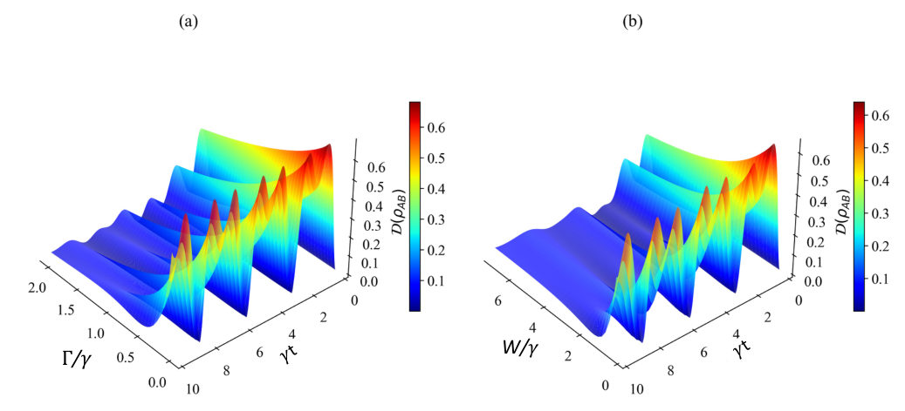
<figcaption class="paper-figure-caption"><b>Fig 3.</b> Figure 2: Time evolution of quantum discord D(ρAB) in a tunnel-coupled DQD system connected to fermionic reservoirs: (a) variation with system–reservoir coupling strength ΓL = ΓR for fixed spectral bandwidth WL = WR = W = γ, and (b) variation with spectral bandwidth WL = WR for fixed coupling strength ΓL = ΓR = Γ = 0.5γ.</figcaption>
</figure>
<figure class="paper-figure-card">

<figcaption class="paper-figure-caption"><b>Fig 4.</b> Figure 3: Steady-state: (a) quantum discord D(ρAB), (b) classical correlation C(ρAB) and (c) Steady-state ratio D(ρAB)/C(ρAB) as functions of coupling strength Γ and spectral bandwidth W for symmetric coupling ΓL = ΓR ≡Γ and WL = WR ≡W.</figcaption>
</figure>
<figure class="paper-figure-card">
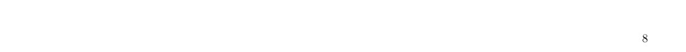
<figcaption class="paper-figure-caption"><b>Fig 5.</b> Fig. 3(c) shows the ratio D(ρAB)/C(ρAB) across the same parameter space. As far as the |01⟩initial state is concerned, the ratio exceeds unity everywhere, confirming that quantum discord always equals or exceeds classical correlation regardless of coupling strength or bandwidth. In the weak-coupling, narrow-bandwidth corner, the ratio approaches ∼1.0, indicating that both types of correlations are of comparable magnitude. As Γ and W increase, the ratio rises monotonically toward ∼1.4–1.5, reflecting the faster decay of classical correlations relative to discord established in Fig. 3(a) and (b), and upon further increase in both parameters, the ratio begins to decrease. This monotonic...</figcaption>
</figure>
</div>

<p><strong>Summary.</strong> This paper analyzes the robustness of quantum discord in a double quantum dot system undergoing non-equilibrium electronic transport. By using advanced theoretical techniques like the quantum Langevin equation, the authors show that quantum correlations persist robustly even when entanglement vanishes. This establishes nonequilibrium transport as a controllable mechanism for engineering nonclassical features in open fermionic devices.</p>
<p><strong>Why it may be interesting.</strong> This work directly addresses open quantum systems dynamics in mesoscopic devices, providing quantitative tools (like Discord) to characterize nonclassicality under realistic thermal and bias conditions, which is highly relevant to AMO physics.</p>
<details>
<summary>Detailed structure</summary>
<p><strong>Main problem.</strong> The study investigates how quantum correlations, specifically Quantum Discord, behave during non-equilibrium electronic transport processes.</p>
<p><strong>Main result.</strong> Quantum discord remains finite in the steady state over a broad parameter range, demonstrating that nonequilibrium transport provides a robust mechanism for controlling nonclassical correlations.</p>
<p><strong>Method.</strong> The analysis employs the quantum Langevin equation formalism to derive the exact reduced density matrix and calculate correlation measures like Quantum Discord and Classical Correlation.</p>
<p><strong>Model / system.</strong> The system is a double quantum dot (DQD) coupled to fermionic reservoirs, modeled using a full Hamiltonian structure ($H = H_S + H_B + H_I$).</p>
<p><strong>Key observables.</strong> Quantum Discord $D(
ho_{AB})$, Classical Correlation $C(
ho_{AB})$, and the ratio $D/C$.</p>
<p><strong>Important parameters / regimes.</strong> System-reservoir coupling strength ($\Gamma$), spectral bandwidth ($W$), thermal bias ($\Delta T$), and reservoir asymmetry.</p>
<p><strong>Assumptions / limitations.</strong> The analysis utilizes a Lorentzian spectral density for fermionic reservoirs and employs the quantum Langevin equation to retain non-Markovian memory effects.</p>
<p><strong>Figures summary.</strong> Figures illustrate time evolution of correlations showing convergence to steady states, dependence on coupling strength ($\Gamma$) and bandwidth ($W$), and how thermal gradients affect discord magnitude.</p>
<p><strong>Paper structure.</strong> The paper systematically analyzes the transient dynamics first, establishing that initial state does not determine the final steady-state correlation values. It then explores parameter dependencies (coupling, bandwidth, asymmetry) to show robustness and control mechanisms for quantum correlations.</p>
</details>
<details>
<summary>Abstract</summary>
<p>Quantum discord captures quantum correlations beyond entanglement and can remain finite even when the entanglement vanishes. We investigate the transient nonequilibrium dynamics and steady-state behavior of quantum discord and classical correlations in a double quantum dot (DQD) system coupled to fermionic reservoirs. By employing a quantum Langevin equation formalism, we obtain the exact reduced density matrix of the system, enabling a comprehensive analysis of its quantum and classical correlations under nonequilibrium conditions. The influence of system-reservoir coupling strength, spectral bandwidth, thermal bias, and varying initial state on both the transient dynamics and steady-state correlations is systematically analyzed. Quantum discord remains finite in the nonequilibrium steady state over a broad parameter range. Although thermal gradients reduce the overall magnitude of correlations, quantum discord persists and exhibits greater resilience. These results demonstrate that nonequilibrium electronic transport, together with the environmental spectral properties and reservoir asymmetry, provides an effective means of controlling nonclassical correlations in mesoscopic systems and establishes quantum discord as a robust hallmark of open fermionic quantum devices.</p>
</details>
<p><sub><a href="#top">↑ back to top</a></sub></p>

<p><a id="paper-2607.00835"></a></p>
<h3 id="simulating-generic-single-qubit-open-dynamics-via-polarization-frequency-coupling-in-a-photonic-interferometer"><a href="http://arxiv.org/abs/2607.00835v1">Simulating generic single-qubit open-dynamics via polarization-frequency coupling in a photonic interferometer</a></h3>
<p><strong>Authors:</strong> Kalle Raikisto, Alberto Ferrara, Tom Kuusela, Rosario Lo Franco, Jyrki Piilo<br>
<strong>Type:</strong> theory · <strong>Category:</strong> quantum information and computing · <strong>PDF:</strong> <a href="https://arxiv.org/pdf/2607.00835v1">https://arxiv.org/pdf/2607.00835v1</a><br>
<strong>Analysis basis:</strong> full PDF text, analyzed in chunks
<strong>Topic relevance:</strong> 🔥 <code>analog quantum simulation</code> <strong>4/5</strong> · <code>interference shaping light</code> <strong>3/5</strong> · <code>methods for driven-dissipative</code> <strong>3/5</strong> · <code>quantum optics experiment</code> <strong>3/5</strong> · <code>QC/QI experiment</code> <strong>2/5</strong> · <code>driven-dissipative phase transition</code> <strong>2/5</strong> · <code>non-equilibrium dynamics</code> <strong>2/5</strong> · <code>quantum measurements</code> <strong>2/5</strong> · <code>Keldysh / 2PI / non-Gaussian methods</code> <strong>1/5</strong> · <code>correlated / nonlocal dissipation</code> <strong>1/5</strong> · <code>entanglement &amp; information structure</code> <strong>1/5</strong> · <code>measurement-induced transitions</code> <strong>1/5</strong> · <code>non-equilibrium universality</code> <strong>1/5</strong></p>
<div class="figure-strip-hint">↔ Scroll figures horizontally</div>
<div class="paper-figures-scroll">
<figure class="paper-figure-card">
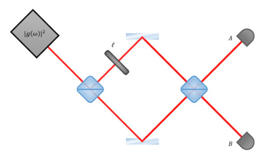
<figcaption class="paper-figure-caption"><b>Fig 1.</b> FIG. 1. Diagram of the setup. The system is a Mach-Zehnder interferometer consisting of 2 beam splitters (blue), where the photon goes through quartz plate (grey). The initial state is determined by the choice of frequency distribution |g(ω)|2</figcaption>
</figure>
<figure class="paper-figure-card">
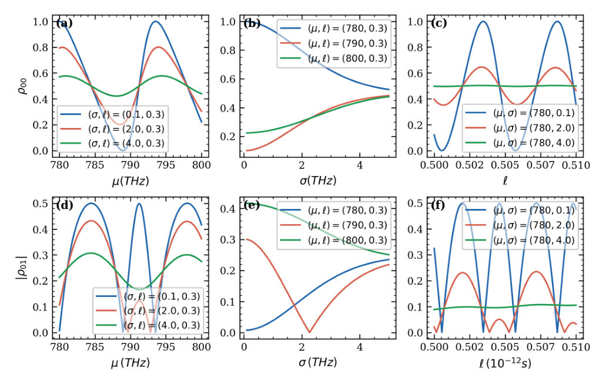
<figcaption class="paper-figure-caption"><b>Fig 2.</b> FIG. 2. The diagonal and off-diagonal values of the polarization state for one of the output branch of the interferometer, as a function of the controllable parameters µ, σ, ℓ. The other parameters are set to CH = 0.5, nH = 1.553 and nV = 1.544. Panels (a, b, c): ρ00 as function of µ, σ and ℓrespectively. Panels (d, e, f): |ρ01| as function of µ, σ and ℓrespectively.</figcaption>
</figure>
<figure class="paper-figure-card">
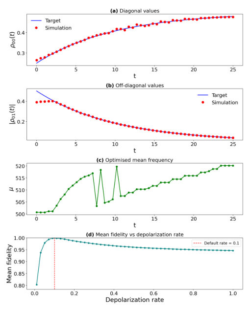
<figcaption class="paper-figure-caption"><b>Fig 3.</b> FIG. 3. Results of the single qubit simulation for the depo- larizing channel, as described in Eq. (13) (a): Comparison of the diagonal element ρ00 (b): Comparison of the off-diagonal coherence (c): Values of the mean frequency µ in the unit of THz. (d): Mean fidelity of the simulation shown as function of the depolarization rate γ. For (a)-(c) the parameters are ℓ= 8.688229·10−12 s, σ = 0.1 THz, nH = 1.553, nV = 1.544, |CH| = 0.527694, γ = 0.1. For (d) parameters ℓ, CH and σ are kept while a new set of µ values is separately optimized each γ.</figcaption>
</figure>
<figure class="paper-figure-card">
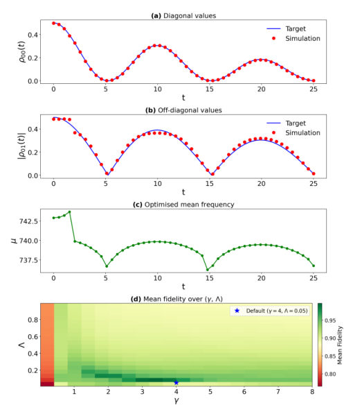
<figcaption class="paper-figure-caption"><b>Fig 4.</b> FIG. 4. Results of the single qubit simulation for a non- Markovian dynamics, as described in Eq. (16) (a): Com- parison of the diagonal element ρ00 (b): Comparison of the off-diagonal coherence (c): Values of the mean frequency µ in the unit of THz. (d): Colormap of the mean fidelity as a function of γ and λ. For (a)-(c) the parameters are ℓ= 0.101579 · 10−12 s, σ = 0.637 THz, nH = 1.553, nV = 1.544, |CH| = 0.3, γ = 4, λ = 0.05. For (d) pa- rameters ℓ, CH and σ are kept while a new set of µ values is separately optimized each γ, λ.</figcaption>
</figure>
<figure class="paper-figure-card">

<figcaption class="paper-figure-caption"><b>Fig 5.</b> FIG. 5. Probability of finding the photon in the output branch A as (a): function of µ and (b): a function of σ.</figcaption>
</figure>
</div>

<p><strong>Summary.</strong> The paper proposes using a single photon interferometer with birefringent quartz to simulate arbitrary open-system dynamics for a qubit encoded in polarization. By treating the frequency mode as an environment, they derive protocols that reproduce complex noise models, including non-Markovian behavior. This establishes the photonic setup as a versatile tool for quantum process simulation.</p>
<p><strong>Why it may be interesting.</strong> This work provides a highly versatile, all-optical method for quantum process tomography on qubits, which is crucial for understanding decoherence mechanisms in photonic quantum computing architectures.</p>
<details>
<summary>Detailed structure</summary>
<p><strong>Main problem.</strong> The primary goal is simulating arbitrary single-qubit open-system dynamics using a controllable photonic platform.</p>
<p><strong>Main result.</strong> The setup successfully models complex decoherence processes, including non-Markovian dynamics and structured environmental coupling, by engineering the interaction between polarization and frequency degrees of freedom.</p>
<p><strong>Method.</strong> The authors use an analytical approach involving partial tracing over the continuous frequency environment to derive the reduced density matrix evolution for the qubit polarization state.</p>
<p><strong>Model / system.</strong> The physical system is a single photon propagating through an open Mach-Zehnder interferometer containing a birefringent quartz plate. The qubit is encoded in polarization, and the frequency acts as the effective environment.</p>
<p><strong>Key observables.</strong> Qubit populations ($
ho_{00}, 
ho_{11}$) and coherences ($
ho_{01}$), detection probabilities ($p_j$), and mean fidelity of the simulation.</p>
<p><strong>Important parameters / regimes.</strong> Controllable parameters include the spectral width ($\sigma$), mean frequency ($\mu$), quartz thickness ($\ell$), and initial polarization amplitudes ($C_H, C_V$).</p>
<p><strong>Assumptions / limitations.</strong> The analysis assumes a Gaussian distribution for the photon frequency spectrum ($|g(\omega)|^2$) and relies on tracing out the continuous frequency degree of freedom.</p>
<p><strong>Figures summary.</strong> Figures illustrate the setup (MZI with quartz), show probability distributions vs. tuning parameters ($\mu, \sigma$), and compare simulated qubit evolution against known noise models like depolarization and non-Markovian dynamics.</p>
<p><strong>Paper structure.</strong> The paper progresses from defining the physical setup and deriving the initial reduced density matrix via partial tracing over frequency (Appendix A). It then develops the simulation framework by identifying controllable parameters. Finally, it benchmarks the protocol by simulating specific open dynamics, including Markovian damping and non-Markovian coherence revivals.</p>
</details>
<details>
<summary>Abstract</summary>
<p>We propose a photonic platform for simulating arbitrary single-qubit open-system dynamics using a single photon in an open Mach-Zehnder interferometer. A birefringent quartz plate induces a coupling between the polarization and frequency degrees of freedom. By treating the latter as an effective environment, we analytically derive the reduced polarization dynamics. We show that the resulting evolution is characterized by a controllable interplay between populations and coherence, instead of the usual dephasing caused by quartz plates. By adjusting the photon frequency distribution and interferometric parameters, we demonstrate that target single-qubit states can be efficiently reproduced through a tunable optical protocol expected to work under accessible experimental conditions. The simulator is benchmarked against paradigmatic open-system evolutions, including depolarization and non-Markovian dynamics, achieving high accuracy. Our results establish polarization-frequency engineered photonic interferometers as a versatile protocol for simulation of open quantum systems.</p>
</details>
<p><sub><a href="#top">↑ back to top</a></sub></p>

<p><a id="paper-2607.00381"></a></p>
<h3 id="subsystem-thermalization-and-work-statistical-characterizations-of-floquet-dynamics"><a href="http://arxiv.org/abs/2607.00381v1">Subsystem Thermalization and Work Statistical Characterizations of Floquet Dynamics</a></h3>
<p><strong>Authors:</strong> Feng-Li Lin, Ching-Yu Huang<br>
<strong>Type:</strong> theory · <strong>Category:</strong> statistical mechanics · <strong>PDF:</strong> <a href="https://arxiv.org/pdf/2607.00381v1">https://arxiv.org/pdf/2607.00381v1</a><br>
<strong>Analysis basis:</strong> full PDF text, analyzed in chunks
<strong>Topic relevance:</strong> 🔥 <code>non-equilibrium dynamics</code> <strong>4/5</strong> · 🔥 <code>scars &amp; prethermalization</code> <strong>4/5</strong> · <code>driven-dissipative phase transition</code> <strong>3/5</strong> · <code>entanglement &amp; information structure</code> <strong>3/5</strong> · <code>methods for driven-dissipative</code> <strong>3/5</strong> · <code>analog quantum simulation</code> <strong>2/5</strong> · <code>correlated / nonlocal dissipation</code> <strong>2/5</strong> · <code>non-equilibrium universality</code> <strong>2/5</strong> · <code>Keldysh / 2PI / non-Gaussian methods</code> <strong>1/5</strong> · <code>Kondo &amp; dissipative impurity</code> <strong>1/5</strong> · <code>exotic spin models in light-matter</code> <strong>1/5</strong></p>
<div class="figure-strip-hint">↔ Scroll figures horizontally</div>
<div class="paper-figures-scroll">
<figure class="paper-figure-card">
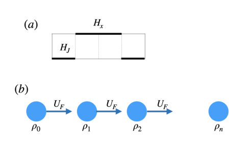
<figcaption class="paper-figure-caption"><b>Fig 1.</b> FIG. 1. (a) Schematic illustration of the periodically driven Hamilto- nian. Within one driving period T, the system alternates between two non-commuting parts, HJ and Hx, in a piecewise-constant (bang–bang) manner. (b) Stroboscopic evolution of the quantum state under the Floquet operator UF . Starting from the initial state ρ0, the state after n driving cycles is given by ρn, where each appli- cation of UF corresponds to one full driving period 2π/ω.</figcaption>
</figure>
<figure class="paper-figure-card">

<figcaption class="paper-figure-caption"><b>Fig 2.</b> FIG. 2. Stroboscopic evolution of the coherence-related quantities CW n (solid lines) and Cχ n (dashed lines) for characterizing the quantum coherence of Floquet dynamics by work statistics from the initial state ρ0 which is either a thermal state ρβ=1 (red) or a N´eel state (green). for three driving frequencies, ω = 3.0, 10.0, 20.0. The inset figure in the subfigure (a) shows the zoom-in pattern in the regime 80 ≤n ≤100. For this figure and the ones presented later, the initial states are always prepared with respect to the spin chain Hamiltonian HJ + Hx of N = 10 sites with fixed parameters J = 1, hx = 0.7, and hz = 1.0.</figcaption>
</figure>
<figure class="paper-figure-card">

<figcaption class="paper-figure-caption"><b>Fig 3.</b> FIG. 3. Stroboscopic evolution of the effective inverse temperature βn defined by (7) by choosing H0 = HJ (blue), Have (orange) and Heff (green) with three driving frequencies ω = 3.0, 10.0, 20.0 as shown in the respective subfigures (a), (b), (c) from an initial thermal state of unit inverse temperature, ρ0 = ρβ=1. The result is briefly summarized as follows. In the subfigure (a), βn≫1 approaches zero for HJ and Have, but not for Heff as shown in the zoomed inset figure. In the subfigure (b), the βn≫1’s for the three Hamiltonians are different. In the subfigure (c), Have and Heff yield the same βn≫1, which is slightly larger than β0 = 1 but is larger than the βn≫1 from HJ.</figcaption>
</figure>
<figure class="paper-figure-card">

<figcaption class="paper-figure-caption"><b>Fig 4.</b> FIG. 4. Comparison of stroboscopic behaviors of relative entropy S  ρA n ρA βn  in characterizing subsystem Floquet thermalization for the βn given in Fig. 3 for H0 = HJ (blue), Have (green) and Heff (red) from a initial thermal state ρ0 = ρβ=1. We again consider three driving frequencies (a) (ω = 3.0), (b) (ω = 10.0), and (c) (ω = 20.0) with two different subsystem sizes A = 1 (solid lines) and A = 5 (dashed lines). At low frequency (ω = 3.0), the relative entropy approaches almost vanishing values for both A = 1 and A = 5 for all three choices of H0. It implies that the subsystem Floquet thermalization works well up to A = 5. At the intermediate and high frequencies (ω = 10.0, 20.0),...</figcaption>
</figure>
<figure class="paper-figure-card">

<figcaption class="paper-figure-caption"><b>Fig 5.</b> FIG. 5. Stroboscopic evolution of relative entropy S  ρA n ρA βn  for characterizing the subsystem thermalization of Floquet dynamics for three driving frequencies ω = 3.0, 10.0, 20.0 from an initial state which is either a thermal state ρβ=1 (red) or a N´eel state (green) for two different subsystem sizes A = 1 (solid lines) and A = 5 (dashed lines). Here, we choose H0 = Have to determine βn by (7). The inset figure in the subfigure (a) shows the zoom-in pattern in the regime 0 ≤n ≤100. The relative entropies approach nearly-vanishing values steadily in all cases when the initial state is ρβ=1, implying almost-global thermalization rather than just subsystem thermalization. On the other...</figcaption>
</figure>
</div>

<p><strong>Summary.</strong> The paper develops a comprehensive diagnostic toolkit to study thermalization in periodically driven quantum spin chains. By simultaneously analyzing subsystem equilibration via relative entropy and the statistics of work done using fluctuation theorems, the authors demonstrate that local and global indicators track the same dynamical crossover across different driving frequencies. This establishes a unified and experimentally accessible method for characterizing prethermal regimes and energy absorption in interacting quantum systems.</p>
<p><strong>Why it may be interesting.</strong> This work provides a powerful, unified theoretical framework for understanding non-equilibrium dynamics in driven quantum matter, linking local measurements (subsystems) to global thermodynamic quantities (work), which is highly relevant for open quantum systems research.</p>
<details>
<summary>Detailed structure</summary>
<p><strong>Main problem.</strong> The study investigates how periodically driven quantum systems thermalize, focusing on characterizing both local equilibration (subsystem) and global energy absorption (work statistics).</p>
<p><strong>Main result.</strong> Both subsystem thermalization diagnostics and work statistics consistently reveal the same dynamical crossover: from prethermal behavior at intermediate driving frequencies to eventual heating or steady states.</p>
<p><strong>Method.</strong> The authors combine two operational diagnostics—analyzing reduced density matrices for local equilibration and calculating fluctuation theorems/characteristic functions of work performed over a Floquet cycle—to characterize thermalization.</p>
<p><strong>Model / system.</strong> The system is an N-site open Ising spin chain subjected to periodic driving (Floquet dynamics). The analysis compares results derived using different effective Hamiltonians ($H_J$, $H_{	ext{eff}}$, and $H_{	ext{ave}}$).</p>
<p><strong>Key observables.</strong> Reduced density matrices ($
ho_A$), relative entropy ($S(
ho_A || 
ho_A^{eta})$), work distribution function (WDF) characteristic functions, and fluctuation theorem deviation measures ($  ext{CFT}_n$).</p>
<p><strong>Important parameters / regimes.</strong> Driving frequency ($\omega$) is crucial, defining regimes: low $\omega$ (infinite T heating), intermediate $\omega$ (prethermal plateau), and high $\omega$ (finite T state).</p>
<p><strong>Assumptions / limitations.</strong> The analysis relies on comparing results derived from different choices of the effective Hamiltonian ($H_0$), with $H_{	ext{ave}}$ being shown to be the most consistent choice.</p>
<p><strong>Figures summary.</strong> Figures illustrate the stroboscopic evolution of coherence measures ($ ext{CW}_n,  ext{C}\chi_n$) and relative entropy ($S$) across varying driving frequencies, showing characteristic crossovers. Fluctuation theorem deviations ($   ext{CFT}_n$) are also plotted.</p>
<p><strong>Paper structure.</strong> The paper systematically introduces the model (Floquet Ising chain) and then develops the analysis by applying two complementary diagnostics: subsystem thermalization using relative entropy, and global characterization via work statistics and fluctuation theorems. The results are presented by comparing how these two methods track the same frequency-dependent crossover.</p>
</details>
<details>
<summary>Abstract</summary>
<p>We study Floquet thermalization in a periodically driven quantum non-integrable Ising chain by combining two operational diagnostics: subsystem thermalization and work statistics. For generic interacting Floquet systems, stroboscopic dynamics lead to heating toward an infinite-temperature state at low driving frequencies, to a prethermal state during the crossover regime, and then to a finite-temperature state at high driving frequencies. We show that reduced density matrices of small subsystems provide a precise measure of local equilibration and clearly resolve prethermal plateaus. In parallel, we analyze the statistics of work performed over a Floquet cycle using both the characteristic function of work with and without the two-point measurements, and the related fluctuation theorem, which captures coherent contributions and deviations from thermal equilibrium. By comparing these two diagnostics within the same Floquet setting, we demonstrate that work statistics encode the same dynamical crossover that governs subsystem thermalization. Our results establish a unified and experimentally accessible framework for characterizing Floquet thermalization, prethermal regimes, and coherent energy absorption in interacting quantum systems.</p>
</details>
<p><sub><a href="#top">↑ back to top</a></sub></p>

<p><a id="paper-2607.00086"></a></p>
<h3 id="dissipation-splits-the-mott-transition-in-one-dimension"><a href="http://arxiv.org/abs/2607.00086v1">Dissipation splits the Mott transition in one dimension</a></h3>
<p><strong>Authors:</strong> Oscar Bouverot-Dupuis, Alberto Rosso, Laura Foini<br>
<strong>Type:</strong> theory · <strong>Category:</strong> strongly correlated electrons · <strong>PDF:</strong> <a href="https://arxiv.org/pdf/2607.00086v1">https://arxiv.org/pdf/2607.00086v1</a><br>
<strong>Analysis basis:</strong> full PDF text, analyzed in chunks
<strong>Topic relevance:</strong> 🔥 <code>driven-dissipative phase transition</code> <strong>4/5</strong> · <code>Frenkel-Kontorova</code> <strong>3/5</strong> · <code>analog quantum simulation</code> <strong>3/5</strong> · <code>correlated / nonlocal dissipation</code> <strong>3/5</strong> · <code>methods for driven-dissipative</code> <strong>3/5</strong> · <code>non-equilibrium universality</code> <strong>3/5</strong> · <code>Kondo &amp; dissipative impurity</code> <strong>2/5</strong> · <code>non-equilibrium dynamics</code> <strong>2/5</strong> · <code>Keldysh / 2PI / non-Gaussian methods</code> <strong>1/5</strong></p>
<div class="figure-strip-hint">↔ Scroll figures horizontally</div>
<div class="paper-figures-scroll">
<figure class="paper-figure-card">
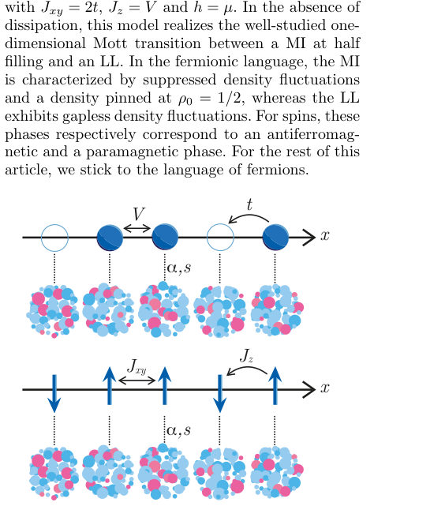
<figcaption class="paper-figure-caption"><b>Fig 1.</b> Figure 1. Schematic representation of the dissipative sys- tem. A one-dimensional fermionic chain (top), or equiv- alently an XXZ spin chain (bottom), is coupled to inde- pendent local baths characterized by the low-frequency spectral function J(ω) ≃α|ω|s.</figcaption>
</figure>
<figure class="paper-figure-card">

<figcaption class="paper-figure-caption"><b>Fig 2.</b> Figure 2. Bosonized representation of density excita- tions. A particle added on top of the half-filled state ρ0 = 1/2 corresponds to a kink of amplitude −π in the bosonic field (top). The half-filled background also sup- ports elementary domain walls carrying half the particle charge, represented by kinks of amplitude ±π/2 (bot- tom).</figcaption>
</figure>
<figure class="paper-figure-card">

<figcaption class="paper-figure-caption"><b>Fig 3.</b> Figure 3. Phase diagrams for s &lt; 1 (top), 1 &lt; s &lt; 3/2 (middle) and s &gt; 3/2 (bottom). The blue transition lines and the tip of the lobe belong to the BKT universality class. The magenta lines are second order commensurate- incommensurate transitions with exponents depending on the bath exponent s.</figcaption>
</figure>
<figure class="paper-figure-card">
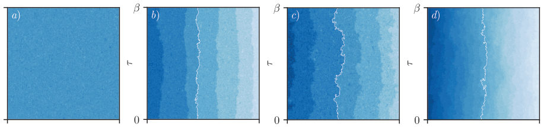
<figcaption class="paper-figure-caption"><b>Fig 4.</b> Figure 4. Typical field configurations ϕ(x, τ) on a lattice of size 256 × 256. The colourmap encodes the value of the field ϕ with darker blue signifying higher values of ϕ. Each kink has an amplitude π/2. We have highlighted one kink for each of the three rightmost plots. From left to right : a) is the MI with no kinks, b) is the DP for s = 1.25 with 6 kinks, c) is the LL with 6 kinks, d) is the LL with 20 kinks. The parameters are K = 0.35, u = 1, g = 0, α = 0.5 and s = 1.25 for a), b) and s = 1.75 for c), d). The data were obtained by working in the canonical ensemble (fixed number of kinks), so the chemical potential µ is not specified.</figcaption>
</figure>
<figure class="paper-figure-card">

<figcaption class="paper-figure-caption"><b>Fig 5.</b> Figure 5. C/IC transitions at s = 1.25 (top) and s = 1.75 (bottom) for increasing L = β. Top: MI to DP transition. The MI is at µ &lt; µc ≃0.8, while the DP is at µ &gt; µc. Bottom: MI to LL transition. The MI is at µ &lt; µc ≃0.5, while the LL is at µ &gt; µc. From left to right: doping δρ, superfluid stiffness ρs, compressibility κ and renormalised Luttinger parameter KR. In all plots, only µ is varied and K = 0.35, u = 1, g = 0, α = 0.5. The black dashed lines correspond to the values δρLL, ρsLL, κLL, K of a pure LL (K = 0.35, u = 1, g = α = 0). The red dashed line in the lower right plot is at KLL−MI c = 1/4. Error bars are shown and often smaller than the marker size.</figcaption>
</figure>
</div>

<p><strong>Summary.</strong> The paper investigates the effect of local dissipation on the one-dimensional Mott transition in interacting fermions. It shows that for certain bath couplings ($s < 3/2$), the single transition splits into two distinct steps: a BKT transition to an intermediate Dissipative Phase (DP), followed by a new commensurate-incommensurate transition to the Mott Insulator. The analysis uses advanced field theory and RG techniques to characterize these novel critical behaviors.</p>
<p><strong>Why it may be interesting.</strong> This work provides a concrete example of how environmental coupling (dissipation) can qualitatively alter fundamental quantum many-body physics phenomena like Mott transitions, generating novel intermediate phases and critical behavior relevant to strongly correlated materials.</p>
<details>
<summary>Detailed structure</summary>
<p><strong>Main problem.</strong> The central problem is understanding how coupling a quantum system undergoing a Mott transition to local dissipative baths modifies the nature of this phase transition.</p>
<p><strong>Main result.</strong> Dissipation fundamentally reshapes the phase diagram, splitting the conventional Mott transition into two distinct critical phenomena: an LL-to-DP BKT transition followed by a DP-to-MI commensurate-incommensurate transition for bath exponents s &lt; 3/2.</p>
<p><strong>Method.</strong> The authors employ bosonization to derive an effective field theory action, followed by Renormalization Group (RG) analysis and variational calculations on the resulting critical kink dynamics.</p>
<p><strong>Model / system.</strong> The model is a one-dimensional interacting fermionic system exhibiting a Mott transition between a Luttinger liquid (LL) and a Mott insulator (MI), with dissipation introduced via local coupling to harmonic oscillator baths characterized by an exponent s.</p>
<p><strong>Key observables.</strong> Compressibility ($\kappa$), Superfluid stiffness ($
ho_s$), critical exponents ($eta, 
u, z$), and the existence/nature of intermediate phases (DP).</p>
<p><strong>Important parameters / regimes.</strong> Bath exponent $s$, which dictates the spectral density $J(\omega) \sim |\omega|^s$; the critical threshold $s_c = 3/2$.</p>
<p><strong>Assumptions / limitations.</strong> The analysis relies on bosonization, integrating out bath degrees of freedom exactly, and performing perturbative RG expansions around effective field theories for kink fluctuations.</p>
<p><strong>Figures summary.</strong> Figures schematically illustrate the phase diagram showing the splitting of the transition (LL $   o$ DP $ o$ MI) based on $s$, and show finite-size scaling collapses confirming BKT universality at certain points.</p>
<p><strong>Paper structure.</strong> The paper progresses from establishing the physical model and its effective action via bosonization, through RG analysis to determine phase boundaries and critical exponents for different regimes of $s$, culminating in detailed derivations for the two distinct transitions.</p>
</details>
<details>
<summary>Abstract</summary>
<p>Understanding how dissipation modifies quantum phase transitions is a central challenge in many-body physics. A paradigmatic example is the one-dimensional Mott transition, which in isolated systems separates a conducting Luttinger liquid (LL) from a Mott insulator (MI). Here, we study the fate of this transition in the presence of dissipative baths locally coupled to the density. Using bosonisation and an exact integration of the bath degrees of freedom, we show that dissipation fundamentally reshapes the phase diagram for bath exponents $s<3/2$, where $s$ characterises the low-energy bath spectrum. Rather than undergoing a direct LL-MI transition, the system develops an intermediate dissipative phase (DP) that is compressible and gapless, yet has zero superfluid stiffness. As a result, the conventional Mott transition splits into two distinct critical phenomena: a Berezinskii-Kosterlitz-Thouless transition from the LL to the DP, followed by a new commensurate-incommensurate transition from the DP to the MI. We derive an effective field theory for the latter transition and characterize its universality. For $1<s<3/2$, the critical exponents vary continuously with the bath exponent as $β=ν=1/z=s-1$, while for $s<1$ the transition is governed by $β=ν=1/z=0$ and the doping vanishes sharper than any power law. State-of-the-art Monte Carlo simulations quantitatively support our predictions. These results demonstrate that dissipation can qualitatively alter the nature of the Mott transition and generate novel critical behaviour in strongly correlated one-dimensional systems.</p>
</details>
<p><sub><a href="#top">↑ back to top</a></sub></p>

<p><a id="paper-2607.00235"></a></p>
<h3 id="learning-low-energy-subspace-overlaps-in-many-body-systems-with-measurement-based-and-coherent-quantum-strategies"><a href="http://arxiv.org/abs/2607.00235v1">Learning Low-Energy Subspace Overlaps in Many-Body Systems with Measurement-Based and Coherent Quantum Strategies</a></h3>
<p><strong>Authors:</strong> Shamminuj Aktar, Rishabh Bhardwaj, Tanmoy Bhattacharya, Stephan Eidenbenz<br>
<strong>Type:</strong> both · <strong>Category:</strong> statistical mechanics · <strong>PDF:</strong> <a href="https://arxiv.org/pdf/2607.00235v1">https://arxiv.org/pdf/2607.00235v1</a><br>
<strong>Analysis basis:</strong> full PDF text, analyzed in chunks
<strong>Topic relevance:</strong> 🔥 <code>non-equilibrium dynamics</code> <strong>4/5</strong> · <code>analog quantum simulation</code> <strong>3/5</strong> · <code>methods for driven-dissipative</code> <strong>3/5</strong> · <code>non-equilibrium universality</code> <strong>3/5</strong> · <code>quantum measurements</code> <strong>3/5</strong> · <code>entanglement &amp; information structure</code> <strong>2/5</strong> · <code>measurement-induced transitions</code> <strong>2/5</strong> · <code>scars &amp; prethermalization</code> <strong>2/5</strong> · <code>driven-dissipative phase transition</code> <strong>1/5</strong> · <code>exotic spin models in light-matter</code> <strong>1/5</strong></p>
<div class="figure-strip-hint">↔ Scroll figures horizontally</div>
<div class="paper-figures-scroll">
<figure class="paper-figure-card">

<figcaption class="paper-figure-caption"><b>Fig 1.</b> FIG. 1: Distributions of OK across the five dataset configurations. Overlaps concentrate near unity in the weak- quench regime (D1) and spread toward lower values as the quench strength increases (D2, D3). Datasets D4 and D5 share the same quench range as D2–D3 but restrict the target overlap orders to even and odd values of K, respectively.</figcaption>
</figure>
<figure class="paper-figure-card">

<figcaption class="paper-figure-caption"><b>Fig 2.</b> FIG. 2: High-level comparison of the two quantum information extraction strategies. The input state |ψ(t)⟩= e−iHt |ψ0⟩is the time-evolved ground state of H0 under the post-quench Hamiltonian H. (a) Measurement-based pipeline: one of three randomized measurement protocols (Pauli, Clifford, or Pauli on Hamiltonian-aware pre-rotation H0-rot) produces a feature tensor of shape (C, N), which is processed by a 1D CNN together with normalized scalar inputs (h, t, i0). (b) Coherent pipeline: the statevector is loaded via arbitrary state preparation, processed through alternating brickwork convolutional and pooling layers that halve the active qubits at each stage, and the final ⟨Z⟩is mapped to the...</figcaption>
</figure>
<figure class="paper-figure-card">
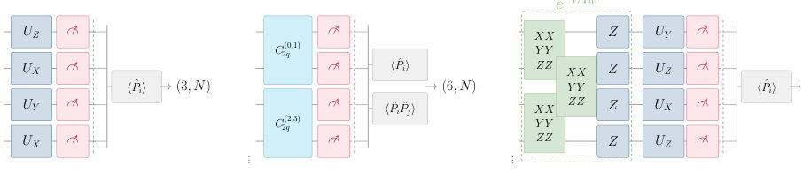
<figcaption class="paper-figure-caption"><b>Fig 3.</b> FIG. 3: Shadow measurement protocols. (a) Pauli shadow: random single-qubit Pauli rotations yield 3N local expecta- tion features via median-of-means (8 groups, 500 shots). (b) Two-qubit Clifford shadow: random 2Q Clifford circuits in alternating brickwork pairing yield 6N features including nearest-neighbor correlators (8 groups, 1,000 shots). (c) Hamiltonian-aware shadow: e−iτH0 pre-rotation consisting of nearest-neighbor Ising exchange gates (XX, Y Y , ZZ) and single-qubit Z rotations representing the longitudinal field hz P</figcaption>
</figure>
<figure class="paper-figure-card">

<figcaption class="paper-figure-caption"><b>Fig 4.</b> FIG. 4: Convolutional and pooling gate structures for the four QCNN variants. (a) Standard Simple: Rot + CNOT (6 params) with CRZ+CRY+CRX pooling (3 params). (b) Standard Deep: same gate applied twice per block. (c) Heisenberg QCNN: local rotations (RZ, RX) followed by Ising exchange (XX, Y Y , ZZ) mirroring H0 (7 params), with exchange-based pooling and RY (4 params). (d) Heisenberg QCNN+: adds post-rotation for enhanced express- ibility (11 params); same pooling as (c).</figcaption>
</figure>
<figure class="paper-figure-card">

<figcaption class="paper-figure-caption"><b>Fig 5.</b> FIG. 5: Test-set R2 as a function of cumulative overlap order K for all seven models across the five dataset configura- tions at the measurement budgets listed in Table II. Each panel shows one dataset: D1 (weak quench), D2 (moderate quench), D3 (strong quench), D4 (full range, even K), and D5 (full range, odd K). Values show mean R2 averaged over three independent runs. Both measurement-based and coherent strategies successfully learn subspace overlaps, but relative performance depends strongly on the quench regime. Supplementary Table IV gives the corresponding R2 values averaged over all K.</figcaption>
</figure>
</div>

<p><strong>Summary.</strong> The paper compares measurement-based shadow tomography against coherent Quantum CNNs for predicting low-energy subspace overlaps in a quenched Heisenberg spin chain. It finds that the best prediction strategy is highly dependent on the quench strength, with physics-informed QCNNs offering superior robustness across different dynamical regimes compared to local shadow measurements.</p>
<p><strong>Why it may be interesting.</strong> This work directly addresses how to extract complex, non-local information (like subspace overlaps) from noisy quantum simulations using machine learning, providing a roadmap for applying QML to characterize thermalization and dynamics in strongly correlated systems.</p>
<details>
<summary>Detailed structure</summary>
<p><strong>Main problem.</strong> The study focuses on developing supervised machine learning techniques to predict the overlap of time-evolved quantum states with specified low-energy subspaces in many-body systems.</p>
<p><strong>Main result.</strong> The optimal prediction strategy is highly dependent on the quench regime: measurement-based shadow methods excel during moderate quenches, while physics-informed Quantum CNNs offer more robust performance across weak and strong dynamical regimes.</p>
<p><strong>Method.</strong> The authors compare two quantum information extraction strategies—measurement-based learning (shadow features processed by classical CNNs) and coherent quantum learning (Quantum CNNs)—to estimate the subspace overlap $\mathcal{O}_K$.</p>
<p><strong>Model / system.</strong> The system studied is a 10-qubit one-dimensional Heisenberg spin chain undergoing time evolution under a local perturbation (quench). The analysis spans weak, moderate, and strong quench regimes.</p>
<p><strong>Key observables.</strong> Subspace overlap $\mathcal{O}_K$, quantified by the coefficient of determination $R^2$.</p>
<p><strong>Important parameters / regimes.</strong> Quench strength ($h$), Overlap Order ($K$), Measurement Shot Count (500 to 5,000), and specific quench regimes (D1-D5).</p>
<p><strong>Assumptions / limitations.</strong> The primary limitations identified are the dominance of state preparation errors on current hardware and the regime dependence of the optimal quantum information extraction strategy.</p>
<p><strong>Figures summary.</strong> Figures illustrate distributions of $\mathcal{O}_K$ across different quench regimes, compare predicted vs. true overlaps ($R^2$ scores) for various models across D1-D3, and detail resource costs (shots, gates) for both shadow and QCNN approaches.</p>
<p><strong>Paper structure.</strong> The paper introduces the problem of predicting $\mathcal{O}_K$, details the two competing quantum learning methods (Shadow vs. QCNN), presents results showing regime dependence in performance ($R^2$), compares resource costs, and concludes with hardware validation findings.</p>
</details>
<details>
<summary>Abstract</summary>
<p>Predicting the overlap of quantum states with specified low-energy subspaces is a key diagnostic for quantum many-body dynamics, with direct applications in state preparation, subspace-based algorithms, and the study of thermalization. We study the supervised prediction of subspace overlaps O_K between time-evolved states and K-dimensional low-energy eigenspaces of a 10-qubit Heisenberg spin chain following a local perturbation. We compare two quantum information extraction strategies: measurement-based learning, in which classical shadow features are processed by convolutional neural networks, and coherent quantum learning, in which quantum convolutional neural networks process the state directly. We further introduce physics-informed variants for both approaches, including Hamiltonian-aware shadows and QCNN gates aligned with the Heisenberg exchange structure. Across five dataset configurations spanning weak, moderate, and strong quench regimes, physics-informed QCNNs achieve stable performance, with mean test-set coefficients of determination R^2 = 0.753-0.846. Shadow-based methods show stronger regime dependence: they outperform QCNNs in the moderate-quench regime, reaching R^2 = 0.886, but underperform in weak and strong quenches at default shot budgets, where the best shadow results are R^2 = 0.615 and 0.672, respectively. Hardware validation on Quantinuum and IBM noise models shows that arbitrary state preparation is the dominant limitation, requiring approximately 2,044 two-qubit gates and causing near-complete depolarization before inference. These results identify a regime-dependent tradeoff between measurement-based and coherent quantum learning, with shadow methods excelling when the target remains locally accessible and physics-informed QCNNs providing more robust performance across dynamical regimes.</p>
</details>
<p><sub><a href="#top">↑ back to top</a></sub></p>

<p><a id="paper-2607.01146"></a></p>
<h3 id="strange-luttinger-liquids-in-a-cavity-embedded-one-dimensional-electronic-chain"><a href="http://arxiv.org/abs/2607.01146v1">Strange Luttinger liquids in a cavity-embedded one-dimensional electronic chain</a></h3>
<p><strong>Authors:</strong> Danh-Phuong Nguyen, Christophe Mora, Cristiano Ciuti<br>
<strong>Type:</strong> theory · <strong>Category:</strong> strongly correlated electrons · <strong>PDF:</strong> <a href="https://arxiv.org/pdf/2607.01146v1">https://arxiv.org/pdf/2607.01146v1</a><br>
<strong>Analysis basis:</strong> full PDF text, analyzed in chunks
<strong>Topic relevance:</strong> 🔥 <code>analog quantum simulation</code> <strong>4/5</strong> · 🔥 <code>correlated cavity matter</code> <strong>4/5</strong> · <code>exotic spin models in light-matter</code> <strong>3/5</strong> · <code>Tavis-Cummings &amp; cavity-many-emitter</code> <strong>2/5</strong> · <code>driven-dissipative phase transition</code> <strong>2/5</strong> · <code>methods for driven-dissipative</code> <strong>2/5</strong> · <code>Frenkel-Kontorova</code> <strong>1/5</strong> · <code>Keldysh / 2PI / non-Gaussian methods</code> <strong>1/5</strong> · <code>Kondo &amp; dissipative impurity</code> <strong>1/5</strong> · <code>correlated / nonlocal dissipation</code> <strong>1/5</strong> · <code>entanglement &amp; information structure</code> <strong>1/5</strong> · <code>non-equilibrium dynamics</code> <strong>1/5</strong> · <code>non-equilibrium universality</code> <strong>1/5</strong></p>
<div class="figure-strip-hint">↔ Scroll figures horizontally</div>
<div class="paper-figures-scroll">
<figure class="paper-figure-card">

<figcaption class="paper-figure-caption"><b>Fig 1.</b> FIG. 1. Characteristic velocities of the strange Luttinger liq- uid, normalized by the Fermi velocity, as functions of the cavity coupling g. Solid lines indicate values obtained from Eq. (13), while open symbols correspond to exact velocities calculated directly from the tight-binding model given by Eq. (5). The sound velocity of the collective excitations is given by ¯v(0) S , while ¯v(0) N and ¯v(0) J characterize the propagation ve- locities of density and current fluctuations, respectively. The parameter λ(0) 1 quantifies the cavity-induced band squeezing. Other parameters: N = 500, Ne/N = 1/4, ωc/t = 10.</figcaption>
</figure>
<figure class="paper-figure-card">
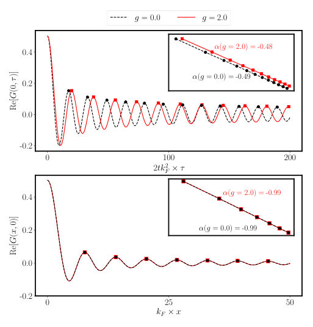
<figcaption class="paper-figure-caption"><b>Fig 2.</b> FIG. 2. Top panel: Real part of the correlation function G(0, τ). Bottom panel: Real part of G(x, 0). G(x, τ) mea- sures the propagation of a fermionic excitation between the spacetime points (0, 0) and (x, τ). Both functions are calcu- lated without (g = 0) and with (g = 2.0) light-matter in- teraction. Inset in both panels display the maxima of the correlation functions on a logarithmic scale, with slope α(g). Other parameters: N = 500, Ne/N = 1/2, ωc/t = 10.</figcaption>
</figure>
<figure class="paper-figure-card">
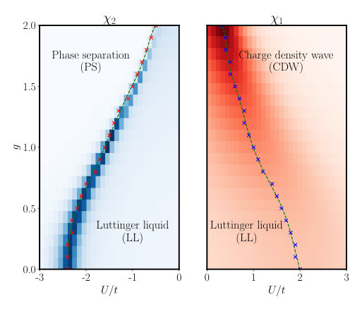
<figcaption class="paper-figure-caption"><b>Fig 3.</b> FIG. 3. Electronic phase diagram at half-filling, plotted as a function of U/t and g for N = 12, ωc/t = 10. Left panel shows χ2 for LL-PS transition, while right panel shows χ1 for LL-CDW transition. In both panels, the cross markers indicate the numerical maxima, while the green dashed lines represent extrapolated results.</figcaption>
</figure>
<figure class="paper-figure-card">

<figcaption class="paper-figure-caption"><b>Fig 4.</b> FIG. 4. Top: Local density of states An(ω) at half-filling for U/t = −2 in the absence of light-matter coupling. Bottom: Edge spectral weight W(U, g) at half-filling as a function of U/t and g. Other parameters: N = 12, ωc/t = 10, Γ = 0.3× level spacing πt/N. The spectral functions are shown in arbi- trary units, and are normalized to their respective maxima.</figcaption>
</figure>
</div>

<p><strong>Summary.</strong> This paper analyzes a one-dimensional electronic chain coupled to an optical cavity field. It demonstrates that this coupling modifies the system's low-energy physics into a 'strange Luttinger liquid,' breaking standard theoretical relations. Furthermore, it maps out a phase diagram showing how electron-electron interactions interact with the cavity field, affecting topological phases like those hosting Majorana modes.</p>
<p><strong>Why it may be interesting.</strong> This work directly bridges cavity QED (AMO physics) with strongly correlated electron systems, showing how light-matter coupling fundamentally alters the universal low-energy description of 1D quantum materials, which is highly relevant for engineered quantum simulators.</p>
<details>
<summary>Detailed structure</summary>
<p><strong>Main problem.</strong> The study investigates how coupling a one-dimensional electronic chain to a quantized vacuum field modifies its low-energy physics, particularly when electron-electron interactions are present.</p>
<p><strong>Main result.</strong> The system exhibits a 'strange Luttinger liquid' in the noninteracting limit, breaking standard velocity relations; for finite interactions, the cavity field significantly shifts phase boundaries and modifies Majorana-like zero modes.</p>
<p><strong>Method.</strong> The authors employ bosonization techniques, low-energy effective Hamiltonians derived via perturbation theory, and exact diagonalization (ED) to map out phase diagrams.</p>
<p><strong>Model / system.</strong> The model is a tight-binding electronic chain coupled to a single quantized cavity mode. The Hamiltonian includes terms for photon energy ($\omega_c$), light-matter coupling ($g$), and electron-electron interaction ($U$).</p>
<p><strong>Key observables.</strong> Low-energy excitation spectrum, local density of states, charge susceptibilities (for CDW/PS transitions), and spectral weight associated with Majorana-like zero modes.</p>
<p><strong>Important parameters / regimes.</strong> Interaction strength ($U$), coupling strength ($g$), cavity frequency ($\omega_c$), and hopping amplitude ($t$). Key regimes include $U=0$ (noninteracting) and finite $U$.</p>
<p><strong>Assumptions / limitations.</strong> The analysis relies on deriving low-energy effective descriptions, using perturbation theory in the light-matter coupling ($g$), and assuming a large but finite chain size.</p>
<p><strong>Figures summary.</strong> Figures illustrate the electronic phase diagram showing transitions between LL, CDW, and PS phases as functions of interaction strength and cavity coupling. Another figure likely shows spectral signatures related to Majorana modes.</p>
<p><strong>Paper structure.</strong> The paper first establishes the noninteracting limit ($U=0$) leading to a strange Luttinger liquid description using bosonization. It then extends this analysis to finite electron-electron interactions, mapping out a phase diagram and analyzing topological features like Majorana zero modes via exact diagonalization.</p>
</details>
<details>
<summary>Abstract</summary>
<p>We study a one-dimensional electronic chain coupled to a homogeneous quantized vacuum field and electron-electron interactions. In the absence of the latter, we derive a low-energy effective description in the presence of light-matter coupling, which we identify as a strange Luttinger liquid. Although it retains a formal resemblance to conventional Luttinger liquid theory, the coupling to the quantum field qualitatively modifies the low-energy sector and breaks the standard velocity relation underlying Luttinger universality. For finite electron-electron interactions, we recover a phase diagram featuring several phases as a function of interaction strength and hopping amplitude, including a phase hosting Majorana-like zero modes. Using exact diagonalization, we compute observables that characterize the phase boundaries and show that the cavity field significantly shifts them. We also study the fate of Majorana-like states under the influence of the cavity field, highlighting their modification by light-matter coupling. Finally, we investigate whether the strange Luttinger liquid description identified in the noninteracting regime continues to hold when electron-electron interactions are introduced.</p>
</details>
<p><sub><a href="#top">↑ back to top</a></sub></p>

<p><a id="paper-2607.01231"></a></p>
<h3 id="brownian-ratchets-and-pumps-universally-simulate-many-body-active-dynamics"><a href="http://arxiv.org/abs/2607.01231v1">Brownian ratchets and pumps universally simulate many-body active dynamics</a></h3>
<p><strong>Authors:</strong> Charles Stahl, Ethan Lake, Vedika Khemani<br>
<strong>Type:</strong> theory · <strong>Category:</strong> statistical mechanics · <strong>PDF:</strong> <a href="https://arxiv.org/pdf/2607.01231v1">https://arxiv.org/pdf/2607.01231v1</a><br>
<strong>Analysis basis:</strong> full PDF text, analyzed in chunks
<strong>Topic relevance:</strong> 🔥 <code>non-equilibrium dynamics</code> <strong>4/5</strong> · <code>driven-dissipative phase transition</code> <strong>3/5</strong> · <code>methods for driven-dissipative</code> <strong>3/5</strong> · <code>non-equilibrium universality</code> <strong>3/5</strong> · <code>analog quantum simulation</code> <strong>2/5</strong> · <code>correlated / nonlocal dissipation</code> <strong>2/5</strong> · <code>Frenkel-Kontorova</code> <strong>1/5</strong> · <code>Keldysh / 2PI / non-Gaussian methods</code> <strong>1/5</strong> · <code>Kondo &amp; dissipative impurity</code> <strong>1/5</strong> · <code>entanglement &amp; information structure</code> <strong>1/5</strong> · <code>exotic spin models in light-matter</code> <strong>1/5</strong> · <code>spintronics-quantum-optics interface</code> <strong>1/5</strong></p>
<div class="figure-strip-hint">↔ Scroll figures horizontally</div>
<div class="paper-figures-scroll">
<figure class="paper-figure-card">

<figcaption class="paper-figure-caption"><b>Fig 1.</b> FIG. 1. We prove that (a) time-dependent systems with dis- sipation (pumps) and (b) systems coupled to baths at different temperatures (ratchets) can simulate (c) cellular automaton dynamics, in continuous and discrete time, respectively.</figcaption>
</figure>
<figure class="paper-figure-card">

<figcaption class="paper-figure-caption"><b>Fig 2.</b> FIG. 2. (a) A Brownian ratchet. If the gear is hotter than the pawl, then Brownian motion will apply random forces clockwise and counterclockwise, but the pawl will preferen- tially allow the gear to rotate clockwise. The result will is clockwise motion. (b) A Brownian ratchet on a lattice. In the limit Tf ≪ϵ ≪Tℓthe leader spin (bottom) can either be on the same site or one ahead of the follower spin (top), but the follower spin always wants to be on the same site as the leader.</figcaption>
</figure>
<figure class="paper-figure-card">
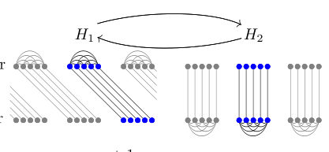
<figcaption class="paper-figure-caption"><b>Fig 3.</b> FIG. 3. Arrangement and coupling of leader and follower spins in the Brownian pump for biased diffusion. Blue disks represent the positions of the particles in an instantaneous ground state. In H1, the follower spins are all coupled to each other, and the leader spins are coupled individually such that xℓ= xf + 1. In H2, the leader spins are all coupled to each other, and the follower spins are coupled individually such that the ground state is xf = xℓ.</figcaption>
</figure>
<figure class="paper-figure-card">
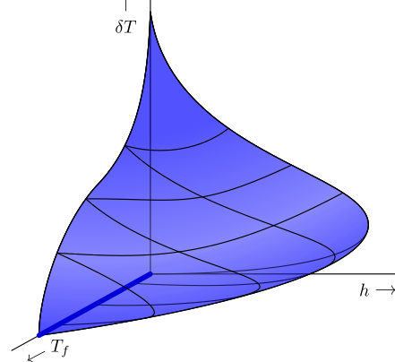
<figcaption class="paper-figure-caption"><b>Fig 4.</b> FIG. 4. Sketch of the phase diagram of the ferromagnetic Toom ratchet as a function of the strength h of a symmetry- breaking field, the temperature difference δT between layers, and the follower temperature Tf. An equilibrium Ising model is not stable to any symmetry-breaking field, leading to a paramagnetic phase at all nonzero values of h when δT = 0 as shown by the blue line. However, when we raise δT, the ferromagnetic phase (shaded in blue) extends to nonzero h. The upper limit to the ferromagnetic phase in the Tf, δT plane are set by the energy scales in the Hamiltonian.</figcaption>
</figure>
<figure class="paper-figure-card">
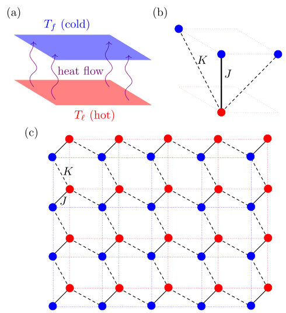
<figcaption class="paper-figure-caption"><b>Fig 5.</b> FIG. 5. Three different representations of the Toom ratchet. Leader spins are red (for hot) and follower spins are blue (for cold). (a) Two square lattices stacked on top of each other, with heat flowing between the layers. (b) The couplings of a single leader spin, with solid lines for strength J and dashed lines for strength K. Dotted lines are only a guide to the eye. (c) An overhead view emphasizes that the two layers can be reinterpreted as two sublattices at different temperatures.</figcaption>
</figure>
</div>

<p><strong>Summary.</strong> The paper establishes that any abstract local active dynamics can be physically simulated using engineered thermal baths. It details two mechanisms—the Brownian pump and the Brownian ratchet—which use periodic driving or steady heat currents to generate non-equilibrium behavior in spin systems. This work fundamentally connects the principles of statistical mechanics, thermodynamics, and computation theory.</p>
<p><strong>Why it may be interesting.</strong> This work provides a powerful, physical realization framework showing how fundamental thermodynamic resources (heat flow, time periodicity) can power complex information processing, bridging statistical mechanics with computation theory.</p>
<details>
<summary>Detailed structure</summary>
<p><strong>Main problem.</strong> To demonstrate that two simple, physically realizable driving mechanisms—the Brownian pump (time-periodic) and the Brownian ratchet (static heat current)—can universally simulate any local active dynamics found in spin systems.</p>
<p><strong>Main result.</strong> The authors prove rigorous theorems showing that both pumps and ratchets can approximate arbitrary probabilistic cellular automata (PCA) dynamics, thereby connecting abstract rule-based activity to concrete non-equilibrium thermodynamics.</p>
<p><strong>Method.</strong> The simulation is achieved by mapping the local update rules of PCAs onto the time evolution governed by engineered Hamiltonians coupled to thermal baths (Glauber dynamics).</p>
<p><strong>Model / system.</strong> The models involve spin systems with 'leader' and 'follower' spins, driven either periodically in time (pump) or by coupling to two reservoirs at different temperatures (ratchet). A concrete example is the ferromagnetic Ising ratchet on a bilayer lattice.</p>
<p><strong>Key observables.</strong> Steady heat current, memory retention time ($t^*_{	ext{mem}}$), order parameter ($\langle m^2 
angle$), and simulation closeness ($\delta$).</p>
<p><strong>Important parameters / regimes.</strong> Temperature difference ($\delta T = T_\ell - T_f$), coupling strengths ($J, K$), driving period ($   au$), and bath temperatures ($T_\ell, T_f$).</p>
<p><strong>Assumptions / limitations.</strong> The simulations are robust approximations that become exact in specific limits (e.g., $\delta 	o 0$ or $1 \ll 	au \ll e^{eta J}$), and the methods are best suited for noise-robust PCAs.</p>
<p><strong>Figures summary.</strong> Figures illustrate phase diagrams showing ordered/disordered states based on temperature differences, and plots demonstrate memory decay rates diverging at a critical field ($h_c$) when active dynamics are present.</p>
<p><strong>Paper structure.</strong> The paper builds from simple examples (biased diffusion) to general theorems: first establishing the ratchet for continuous-time PCA ($    ext{A}<em ext_sync="ext{sync">{    ext{async}}$), then using the pump for discrete-time PCA ($  ext{A}</em>$). The final sections generalize these constructions and discuss quantum extensions.}</p>
</details>
<details>
<summary>Abstract</summary>
<p>Active systems can exhibit a broad range of phenomena forbidden in equilibrium. Their dynamics are often specified by abstract local update rules, and it is generally unclear when the same behavior can arise from physically natural driving. Here we show that two simple driving mechanisms can universally simulate any local active dynamics in spin systems. The first is the familiar setting of a time-periodic Hamiltonian coupled to a cold bath, which we call a "many-body Brownian pump." As a second mechanism, we promote the Brownian ratchet, traditionally a mechanism for transport, to a "many-body Brownian ratchet": a static Hamiltonian coupled to a hot bath and a cold bath, where the resulting steady heat current can be harnessed not only to drive transport but also to generate local active dynamics. Using probabilistic cellular automata as an explicit model, we prove that for any continuous-time (or discrete-time) local active dynamics, there is always a many-body Brownian ratchet (or pump) that approximates the dynamics, up to noise that can be made arbitrarily weak by tuning energy scales and other parameters. As a concrete demonstration, we construct a simple ferromagnetic Ising ratchet on a bilayer lattice. When the two layers are coupled to baths at different temperatures, this model serves as a robust classical memory even under a symmetry-breaking field, something impossible in equilibrium. More broadly, our work shows that ratchets can use steady heat currents to autonomously generate and stabilize novel collective behavior, realizing a new static setting for nonequilibrium many-body dynamics.</p>
</details>
<p><sub><a href="#top">↑ back to top</a></sub></p>

<p><a id="paper-2607.00110"></a></p>
<h3 id="optically-active-single-hole-spin-in-znse"><a href="http://arxiv.org/abs/2607.00110v1">Optically Active Single Hole Spin in ZnSe</a></h3>
<p><strong>Authors:</strong> Amirehsan Alizadehherfati, Yuxi Jiang, Kelsey J. Mirrielees, Nils von den Driesch, Christine Falter, Yurii Kutovyi, Amirehsan Boreiri, Douglas L. Irving, Alexander Pawlis, Edo Waks<br>
<strong>Type:</strong> both · <strong>Category:</strong> quantum information and computing · <strong>PDF:</strong> <a href="https://arxiv.org/pdf/2607.00110v1">https://arxiv.org/pdf/2607.00110v1</a><br>
<strong>Analysis basis:</strong> full PDF text, analyzed in chunks
<strong>Topic relevance:</strong> 🔥 <code>spintronics-quantum-optics interface</code> <strong>4/5</strong> · <code>exotic spin models in light-matter</code> <strong>3/5</strong> · <code>quantum optics experiment</code> <strong>3/5</strong> · <code>Kondo &amp; dissipative impurity</code> <strong>2/5</strong> · <code>QC/QI experiment</code> <strong>2/5</strong> · <code>methods for driven-dissipative</code> <strong>2/5</strong> · <code>non-equilibrium dynamics</code> <strong>2/5</strong> · <code>Keldysh / 2PI / non-Gaussian methods</code> <strong>1/5</strong> · <code>analog quantum simulation</code> <strong>1/5</strong> · <code>correlated / nonlocal dissipation</code> <strong>1/5</strong> · <code>driven-dissipative phase transition</code> <strong>1/5</strong> · <code>quantum measurements</code> <strong>1/5</strong></p>
<div class="figure-strip-hint">↔ Scroll figures horizontally</div>
<div class="paper-figures-scroll">
<figure class="paper-figure-card">
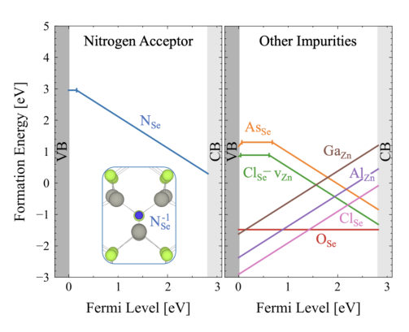
<figcaption class="paper-figure-caption"><b>Fig 1.</b> Figure 1: Formation energy diagrams. Left panel: calculated formation energies of the nitrogen substitutional in ZnSe. Right panel: calculated formation energies of other impurities in ZnSe.</figcaption>
</figure>
<figure class="paper-figure-card">

<figcaption class="paper-figure-caption"><b>Fig 2.</b> Figure 2: Photoluminescence characterization. (a) Sample spectrum containing three main components, free exciton (labeled as FX), negatively charged trion (labeled as X−) and bound exciton line (labeled as A0X) (b) Photoluminescence spatial image of the bound exciton line, achieved by selective filtering the sharp peak. (c) Histogram of bound excitons localization energies, indicating two distributions of peaks for acceptors (gray) and donors (green). We collected the data from 30 different acceptor sites and verified them through magnetospectroscopy. The shaded region indicates the region masked by the strong trion envelope in our sample. (d) Power-dependent photoluminescence excitation...</figcaption>
</figure>
<figure class="paper-figure-card">
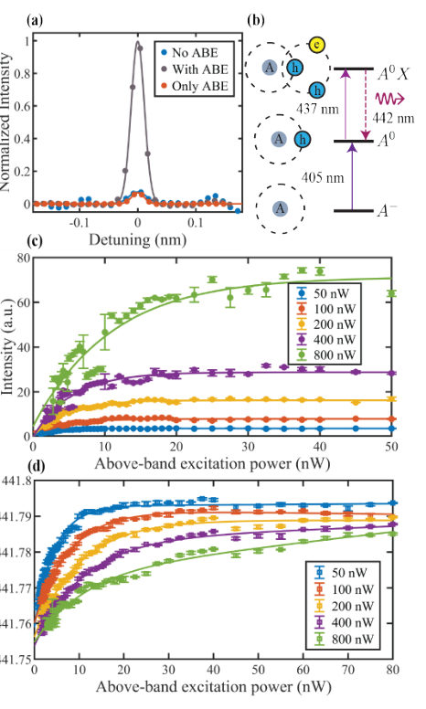
<figcaption class="paper-figure-caption"><b>Fig 3.</b> Figure 3: Photoluminescence excitation measurement of a single acceptor-bound exciton. (a) Spectrum of emission in the absence and presence of above-band excitation (labeled as ABE). (b) Level structure and charge states of the acceptor system. The arrows show the simplified dominant contribution of each laser. (c) Intensity of emission as a function of above-band excitation for different powers of resonant excitation (see legend). (d) Central wavelength of emission as a function of above-band power for different powers of resonant excitation. The trend shows a saturating shift toward higher wavelengths.</figcaption>
</figure>
<figure class="paper-figure-card">
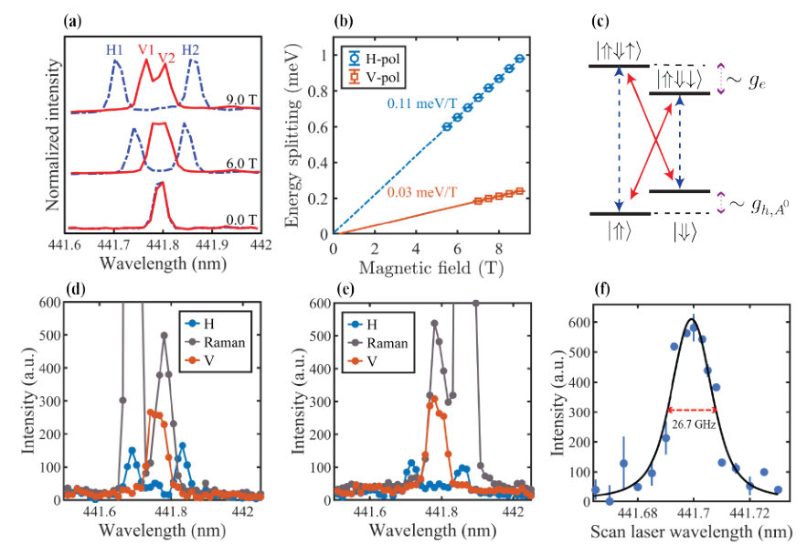
<figcaption class="paper-figure-caption"><b>Fig 4.</b> Figure 4: Magnetic and Raman spectroscopy. (a) Photoluminescence spectrum as a function of magnetic field. (b) Energy splitting of the spectral peaks as a function of magnetic field. The blue and red data points correspond to horizontal (H) and vertical (V) polarizations, respectively. Solid lines represent linear fits extracting the Zeeman splitting rate for each polarization state. (c) Level structure of the acceptor ground and excited state based on extracted g-values. (d-e) Raman sideband (cross-polarized) appears at the partner transition energy when pumping the opposite polarization. For this measurement, we fix the external magnetic field to 6 T. (f) Integrated intensity of Raman...</figcaption>
</figure>
</div>

<p><strong>Summary.</strong> The authors report on the successful creation and characterization of optically active single hole spins in ZnSe quantum wells by using an acceptor impurity instead of traditional p-doping. They confirm single-photon emission via antibunching and model the spin dynamics using rate equations derived from optical measurements. This establishes a viable solid-state platform for developing semiconductor-based quantum information devices.</p>
<p><strong>Why it may be interesting.</strong> This work directly addresses solid-state quantum memory and spin qubits by demonstrating electrical control over hole spins via optical pumping in a semiconductor material. The combination of DFT modeling with time-domain spectroscopy is highly relevant to open quantum systems research.</p>
<details>
<summary>Detailed structure</summary>
<p><strong>Main problem.</strong> The research aims to realize optically active single hole spins in ZnSe, overcoming limitations associated with conventional p-doping methods.</p>
<p><strong>Main result.</strong> They successfully isolated a single-hole spin bound to an acceptor impurity and demonstrated its optical activity, establishing a promising platform for spin qubits and single-photon sources.</p>
<p><strong>Method.</strong> The study combines first-principles DFT calculations to predict defect levels with advanced optical measurements like time-resolved photoluminescence, photon autocorrelation ($    ext{g}^{(2)}(   au)$), and magnetospectroscopy.</p>
<p><strong>Model / system.</strong> The physical system is a single-hole spin bound to a shallow acceptor impurity (likely Nitrogen) within a ZnSe quantum well heterostructure. The dynamics are modeled using rate equations describing transitions between ionized, neutral, and exciton states.</p>
<p><strong>Key observables.</strong> Effective hole g-factor ($\approx 0.7$), optical resonance linewidth ($26.7 	ext{ GHz}$), fast radiative lifetime ($\sim 244 	ext{ ps}$), and antibunching in $ ext{g}^{(2)}(0)$.</p>
<p><strong>Important parameters / regimes.</strong> Acceptor ionization energy ($   ext{E}_{    ext{A}}$) and the relative rates of optical excitation, resonant pumping, and charge trapping.</p>
<p><strong>Assumptions / limitations.</strong> The primary assumption is that optically activating acceptors circumvents p-doping challenges; a limitation noted is that coherence remains limited by spectral diffusion from fluctuating charge environments.</p>
<p><strong>Figures summary.</strong> Figures illustrate the comparison of impurity formation energies (DFT), PL spectra showing bound excitons, power dependence confirming two-level saturation, time decay curves, and $  ext{g}^{(2)}(   au)$ plots demonstrating antibunching.</p>
<p><strong>Paper structure.</strong> The paper progresses from identifying the physical challenge (p-doping limitations) to proposing an optical activation mechanism. It details spectroscopic characterization (g-factor, linewidth), confirms single-photon emission ($  ext{g}^{(2)}$), and models the population dynamics using rate equations based on varying excitation powers.</p>
</details>
<details>
<summary>Abstract</summary>
<p>Semiconductor hole spins offer a pathway to extended coherence times by decoupling from nuclear magnetic noise, while their spin-orbit coupling enables fast all-electrical control. In ZnSe, however, realizing this potential has been limited by p-doping challenges. Here, we circumvent this limit by optically activating acceptors within the ZnSe quantum well. We isolate a single-hole spin bound to a shallow acceptor, confirmed by antibunching and accessed via the fast (244 ps) radiative recombination of a bound exciton. Magnetic and Raman spectroscopy of the ground state reveal an effective hole g-factor of 0.7 and an optical resonance linewidth of 26.7 GHz. Complementary first-principles simulations, together with the experimental results, provide evidence that points toward nitrogen as the most likely acceptor impurity. These results introduce a promising new platform for optically active spin qubits and single-photon sources in ZnSe.</p>
</details>
<p><sub><a href="#top">↑ back to top</a></sub></p>

<p><a id="paper-2607.00718"></a></p>
<h3 id="conditional-enhancement-of-dissipation-induced-nonreciprocity-by-quantum-squeezing"><a href="http://arxiv.org/abs/2607.00718v1">Conditional Enhancement of Dissipation-Induced Nonreciprocity by Quantum Squeezing</a></h3>
<p><strong>Authors:</strong> B. -B. Liu, D. -Y. Wang, J. Tang, Gang Chen, H. Jing, Shi-Lei Su, F. Nori<br>
<strong>Type:</strong> theory · <strong>Category:</strong> other · <strong>PDF:</strong> <a href="https://arxiv.org/pdf/2607.00718v1">https://arxiv.org/pdf/2607.00718v1</a><br>
<strong>Analysis basis:</strong> full PDF text, analyzed in chunks
<strong>Topic relevance:</strong> 🔥 <code>methods for driven-dissipative</code> <strong>4/5</strong> · <code>correlated / nonlocal dissipation</code> <strong>3/5</strong> · <code>correlated cavity matter</code> <strong>3/5</strong> · <code>driven-dissipative phase transition</code> <strong>3/5</strong> · <code>Tavis-Cummings &amp; cavity-many-emitter</code> <strong>2/5</strong> · <code>non-equilibrium dynamics</code> <strong>2/5</strong> · <code>Keldysh / 2PI / non-Gaussian methods</code> <strong>1/5</strong> · <code>analog quantum simulation</code> <strong>1/5</strong> · <code>non-equilibrium universality</code> <strong>1/5</strong></p>
<div class="figure-strip-hint">↔ Scroll figures horizontally</div>
<div class="paper-figures-scroll">
<figure class="paper-figure-card">
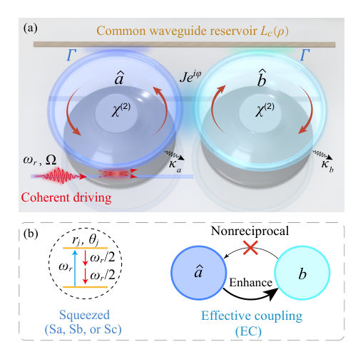
<figcaption class="paper-figure-caption"><b>Fig 1.</b> FIG. 1: (a) Schematic of the nonreciprocal coupling model. Cavity mode a is coherently coupled to cavity mode b with strength Jeiφ, and both cavity modes are dissipatively coupled into a common reservoir at a rate Γ. (b) A coherent drive applied to the nonlinear medium generates squeezing via degenerate parametric amplifi- cation (left), which conditionally enhances the effective nonreciprocal coupling between the cavities (right).</figcaption>
</figure>
<figure class="paper-figure-card">

<figcaption class="paper-figure-caption"><b>Fig 2.</b> FIG. 2: (a) Evolution of the quantum battery energy for four configurations: case 0 [37] (dotted line), case 1 (dash-dotted line), case 2 (dashed line), and case 3 (solid line). (b) Average power P versus the scaled time Jt during the charging process. (c) Steady-state en- ergy enhancement factor Ei b(∞)/Eb versus the squeezing parameter r. (d) Ergotropy enhancement factor Ei b/Eb vs r in the steady state, where Eb = Eb for the case 0 with no squeezing. The symbols are the numerical results, and the curves are the analytical results. (e) Steady- state energy of the quantum battery as a function of coupling strength J. In the strong coupling regime, the stored energy scales as sinh2 r. The...</figcaption>
</figure>
<figure class="paper-figure-card">
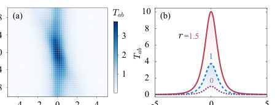
<figcaption class="paper-figure-caption"><b>Fig 3.</b> FIG. 3: (a) Transmission coefficient Tab as a function of input signal frequency ω and squeezed-cavity frequency ωs, with squeezing parameter r = 1. (b) Tab vs ω, where ωs = 0. The parameters used are κa = κb = 8 × 10−5ωb, J = Jop, and Γ = 2J.</figcaption>
</figure>
</div>

<p><strong>Summary.</strong> This paper theoretically explores the role of quantum squeezing in boosting dissipation-induced nonreciprocal interactions within coupled cavity systems. It demonstrates that squeezing can exponentially enhance metrics like coupling strength and energy storage in quantum batteries and optical isolators. The findings establish a tunable method for realizing enhanced, directional quantum signal processing.</p>
<p><strong>Why it may be interesting.</strong> This work provides a detailed theoretical framework for engineering non-Hermitian effects (nonreciprocity) using non-classical resources like squeezing, which is highly relevant for designing advanced quantum optical devices.</p>
<details>
<summary>Detailed structure</summary>
<p><strong>Main problem.</strong> The study investigates how quantum squeezing can enhance nonreciprocal coupling induced by dissipation in coupled quantum systems.</p>
<p><strong>Main result.</strong> Squeezing enhances the effective coupling and improves performance metrics for quantum batteries and optical isolators, though this enhancement is highly dependent on the specific system configuration and parameter regime.</p>
<p><strong>Method.</strong> The analysis uses master equations and quantum Langevin equations to derive the time evolution of expectation values for coupled cavity modes interacting with a common reservoir.</p>
<p><strong>Model / system.</strong> The model involves two coupled cavity modes ($a$ and $b$) subjected to dissipation via a common reservoir, potentially incorporating $\chi^{(2)}$ nonlinearity. Squeezing is introduced into the system (cavity or reservoir) via unitary transformations.</p>
<p><strong>Key observables.</strong> Effective nonreciprocal coupling strength (EC), Enhancement Effect (EE), stored energy, charging power, ergotropy, and optical transmission coefficient ($T_{ab}$).</p>
<p><strong>Important parameters / regimes.</strong> Squeezing parameter ($r$), coupling strength ($J$), reservoir decay rates ($\Gamma$), and detuning ($\omega_s$).</p>
<p><strong>Assumptions / limitations.</strong> The analysis relies on solving the evolution equations for expectation values derived from the master equation in the squeezed frame.</p>
<p><strong>Figures summary.</strong> Figures illustrate energy evolution, charging power enhancement factors, steady-state energy vs. squeezing parameter ($r$), and transmission coefficients ($T_{ab}$) showing exponential amplification with squeezing.</p>
<p><strong>Paper structure.</strong> The paper systematically analyzes five different cases based on where quantum squeezing is applied (cavity mode, reservoir, or both) to quantify its effect on nonreciprocal coupling, followed by specific applications to quantum batteries and optical isolators.</p>
</details>
<details>
<summary>Abstract</summary>
<p>We systematically investigate the role of squeezing in improving dissipation-induced nonreciprocal coupling mediated by a common reservoir, by incorporating a $χ^{(2)}$ nonlinearity into either the cavity mode, the reservoir, or both. Squeezing is capable of exponentially enhancing the effective coupling, but this enhancement is not universal in such a nonreciprocal interaction. Instead, it depends on the system configuration and specific parameter regimes. Specifically, the squeezing of the reservoir injects additional energy into the system via the dissipation channel, modifying the underlying dynamics in a nontrivial manner. Furthermore, we demonstrate that the proposed approach enhances the performance of the quantum battery, including stored energy, charging power, and ergotropy. We provide the corresponding analytical expressions, together with a systematic analysis of energy transport and parameter optimization. Extending the framework to optical isolation, we observe an exponentially amplified output signal. Our results open a new avenue for nonreciprocal quantum information processing and nonreciprocal quantum device design.</p>
</details>
<p><sub><a href="#top">↑ back to top</a></sub></p>

<p><a id="paper-2607.00346"></a></p>
<h3 id="extreme-volume-monogamy-via-bound-state-engineering"><a href="http://arxiv.org/abs/2607.00346v1">Extreme volume monogamy via bound-state engineering</a></h3>
<p><strong>Authors:</strong> Wen-Jie Zhang, Jun-Hong An<br>
<strong>Type:</strong> theory · <strong>Category:</strong> quantum information and computing · <strong>PDF:</strong> <a href="https://arxiv.org/pdf/2607.00346v1">https://arxiv.org/pdf/2607.00346v1</a><br>
<strong>Analysis basis:</strong> full PDF text, analyzed in chunks
<strong>Topic relevance:</strong> 🔥 <code>entanglement &amp; information structure</code> <strong>4/5</strong> · <code>correlated / nonlocal dissipation</code> <strong>3/5</strong> · <code>driven-dissipative phase transition</code> <strong>3/5</strong> · <code>methods for driven-dissipative</code> <strong>3/5</strong> · <code>Keldysh / 2PI / non-Gaussian methods</code> <strong>2/5</strong> · <code>non-equilibrium dynamics</code> <strong>2/5</strong> · <code>non-equilibrium universality</code> <strong>2/5</strong> · <code>quantum measurements</code> <strong>1/5</strong></p>
<div class="figure-strip-hint">↔ Scroll figures horizontally</div>
<div class="paper-figures-scroll">
<figure class="paper-figure-card">
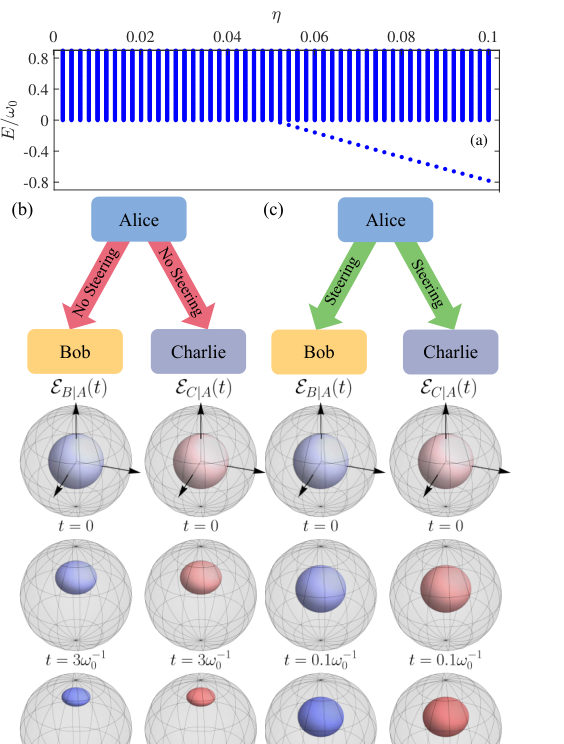
<figcaption class="paper-figure-caption"><b>Fig 1.</b> FIG. 1. (a) Energy spectrum of each qubit-environment sub- system. (b) Steering diagram with Alice as the measurer, showing the steering from Alice to Bob and Charlie, together with the evolution of EB|A and EC|A from top to bottom for no bound states ηA = ηB = ηC = 0.03. (c) Same as (b), but for bound states on all sides with ηA = ηB = ηC = 0.06. The solid surfaces show the numerical evolution, while the golden wireframes on the final QSEs represent the analytical steady-state solutions. The green tetrahedron represents any tetrahedron inscribed in the Bloch sphere. In all plots, we use ωc = 20ω0 and q = 3/4.</figcaption>
</figure>
<figure class="paper-figure-card">

<figcaption class="paper-figure-caption"><b>Fig 2.</b> FIG. 2. (a) Steering diagram with Alice as the measurer, showing the steering from Alice to Bob and Charlie, together with the evolution of EB|A and EC|A from top to bottom for bound states on Alice and Bob but absent on Charlie, i.e., ηA = ηB = 0.06 and ηC = 0.03. (b) Same as (a), but with Bob as the measurer, showing the steering from Bob to Alice and Charlie. The solid surfaces are numerical results, and the golden wireframes are analytical solutions. The green tetrahe- dron cannot enclose the steady QSE, indicating entanglement. In all plots, we use ωc = 20ω0 and q = 3/4.</figcaption>
</figure>
<figure class="paper-figure-card">
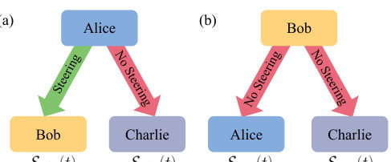
<figcaption class="paper-figure-caption"><b>Fig 3.</b> FIG. 3. (a) Steering diagram with Alice as the measurer, showing the steering from Alice to Bob and Charlie, together with the evolution of EB|A and EC|A from top to bottom for a bound state only on Bob, i.e., ηB = 0.06 and ηA = ηC = 0.03. (b) Same as (a), but with Bob as the measurer, showing the steering from Bob to Alice and Charlie. The solid surfaces are numerical results, and the golden wireframes are analytical solutions. The green tetrahedron can enclose the steady QSE, indicating separability. In all plots, we use ωc = 20ω0 and q = 3/4.</figcaption>
</figure>
</div>

<p><strong>Summary.</strong> The paper introduces 'extreme volume monogamy' by controlling how information leaks between three parties in an open quantum system. By selectively engineering bound states in the local environments of two trusted parties but not a third untrusted party, they demonstrate that the unreliability (steerability) from the untrusted party can be completely suppressed. This offers a powerful tool for designing secure quantum communication channels.</p>
<p><strong>Why it may be interesting.</strong> This work provides a concrete, physical mechanism—selective environmental coupling—to enforce strong quantum correlation constraints (monogamy) in open systems, which is highly relevant to secure quantum communication protocols.</p>
<details>
<summary>Detailed structure</summary>
<p><strong>Main problem.</strong> The goal is to achieve 'extreme volume monogamy' by selectively suppressing information leakage from an untrusted third party while maintaining quantum steering between trusted parties.</p>
<p><strong>Main result.</strong> Selective engineering of bound states in local qubit-environment subsystems can cause the Quantum Steering Ellipsoid (QSE) volume associated with the untrusted party to decay to zero, while preserving finite QSE volumes for the trusted parties.</p>
<p><strong>Method.</strong> The analysis uses the Quantum Steering Ellipsoid (QSE) volume as a diagnostic tool within an open quantum system framework governed by non-Markovian master equations.</p>
<p><strong>Model / system.</strong> A tripartite open quantum system involving three qubits (Alice, Bob, Charlie), each coupled to its own local environment modeled by harmonic oscillators. The dynamics are analyzed using time-dependent coefficients derived from solving auxiliary differential equations.</p>
<p><strong>Key observables.</strong> Quantum Steering Ellipsoid (QSE) volumes ($v_{Y|X}$), which quantify steerability; the presence or absence of bound states in local qubit-environment subsystems.</p>
<p><strong>Important parameters / regimes.</strong> The coupling strength and spectral density of the environment, particularly focusing on regimes where bound states form ($\eta > 0$).</p>
<p><strong>Assumptions / limitations.</strong> The analysis assumes independent coupling to zero-temperature bosonic environments with Ohmic-family spectral densities; it compares non-Markovian dynamics against the Born-Markov approximation.</p>
<p><strong>Figures summary.</strong> Figures illustrate QSE evolution, showing collapse when bound states are absent (Markovian limit) and preservation of finite volumes when bound states are selectively engineered on trusted parties but absent on the untrusted one.</p>
<p><strong>Paper structure.</strong> The paper first introduces volume monogamy constraints. It then models the open system dynamics using a non-Markovian master equation. The core development involves showing that selective bound state engineering allows for the suppression of information access from an untrusted party (zero QSE volume) while maintaining correlations between trusted parties.</p>
</details>
<details>
<summary>Abstract</summary>
<p>Quantum steering ellipsoid (QSE) provides a faithful representation of a two-qubit state. When extended to tripartite systems, the steerability from a trusted party to different receivers is subject to volume monogamy relations, which only constrain the total steerability but cannot individually eliminate the steerability of an untrusted third party, leaving a potential channel for information leakage via steering. Here, we show that this residual steerability can be completely suppressed by selectively engineering bound states in local qubit-environment subsystems, without compromising the steerability between trusted parties. Specifically, when bound states are formed in the subsystems formed by the trusted parties and their environments but absent in the untrusted one, the untrusted party's QSE volume decays to zero, while the trusted party's QSE volume remains finite. Our results establish selective bound-state engineering as a mechanism for extreme volume monogamy, with potential applications in secure quantum communication with an untrusted third party.</p>
</details>
<p><sub><a href="#top">↑ back to top</a></sub></p>

<p><a id="paper-2607.00462"></a></p>
<h3 id="closed-loop-control-for-two-qubit-gates-with-trapped-ions"><a href="http://arxiv.org/abs/2607.00462v1">Closed-loop control for two-qubit gates with trapped ions</a></h3>
<p><strong>Authors:</strong> Eduardo J. Páez, Seyed Shakib Vedaie, Barry C. Sanders<br>
<strong>Type:</strong> theory · <strong>Category:</strong> other · <strong>PDF:</strong> <a href="https://arxiv.org/pdf/2607.00462v1">https://arxiv.org/pdf/2607.00462v1</a><br>
<strong>Analysis basis:</strong> full PDF text, analyzed in chunks
<strong>Topic relevance:</strong> 🔥 <code>QC/QI experiment</code> <strong>4/5</strong> · 🔥 <code>quantum measurements</code> <strong>4/5</strong> · <code>measurement-induced transitions</code> <strong>3/5</strong> · <code>methods for driven-dissipative</code> <strong>3/5</strong> · <code>non-equilibrium dynamics</code> <strong>2/5</strong> · <code>Keldysh / 2PI / non-Gaussian methods</code> <strong>1/5</strong> · <code>driven-dissipative phase transition</code> <strong>1/5</strong> · <code>quantum optics experiment</code> <strong>1/5</strong></p>
<div class="figure-strip-hint">↔ Scroll figures horizontally</div>
<div class="paper-figures-scroll">
<figure class="paper-figure-card">

<figcaption class="paper-figure-caption"><b>Fig 1.</b> Figure 1. (a) Pulse sequence designed by employing the SotA method and the corresponding phase-space trajectories. The colours are arbitrary and intended to guide the eye over each piecewise constant segment. The horizontal dashed line rep- resents the root mean square (RMS) value of the pulse se- quence. (b) Ideal phase-space trajectories. The quadrature components of position X and momentum P are given in ar- bitrary units (a.u.). ‘Mode 0’ is the CoM, ‘Mode 1’ is the tilt mode, and ‘Mode 2’ the ‘plucky’ mode. The colour of the trajectory is associated with the piecewise-constant segment of the pulse sequence shown in (a). The blue ‘X’ markers in (b) indicate the starting and ending points...</figcaption>
</figure>
<figure class="paper-figure-card">

<figcaption class="paper-figure-caption"><b>Fig 2.</b> Figure 2. Diagram of the CLPM-scheme. A three-ion chain is illustrated, where the orange dots represent gate ions and the green dot represents the spectator ion. The spectator ion is illuminated with an external coherent laser coupled to the 2S1/2 – 2P1/2 transition, illustrated as a diagonal blue cone-like shape. An array of lenses and a back mirror collect and su- perpose the fluorescence light to undergo a two-channel time- correlated single-photon counting (TCSPC) setup. The out- put signal is sent to a FPGA for post-processing. The global and bichromatic Raman beams are not shown for simplicity.</figcaption>
</figure>
<figure class="paper-figure-card">
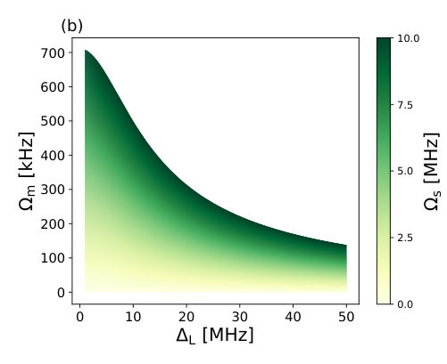
<figcaption class="paper-figure-caption"><b>Fig 3.</b> Figure 3. (a) Emission rates of the spectator Γm ion, and (b) Rabi strength in the mirror mode Ωm versus external laser detuning ∆L. The colour map reflects the Rabi strength of the spectator ion Ωs. The parameters used are NA = 0.4, w0 = 2 µm, Ωs = 3 MHz.</figcaption>
</figure>
<figure class="paper-figure-card">
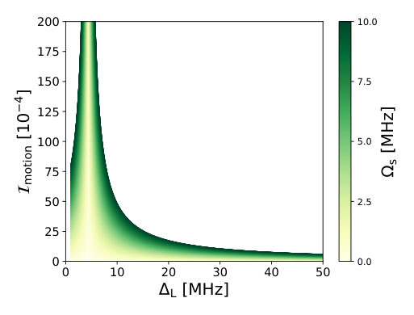
<figcaption class="paper-figure-caption"><b>Fig 4.</b> Figure 5. Error in two-qubit gate due to motion-driven en- tanglement in a chain of three ions. ∆L: laser detuning of the spectator ion. Ωs: Rabi strength on the spectator. The peak coincides with the motional mode frequencies (not including the remaining two modes for clarity).</figcaption>
</figure>
<figure class="paper-figure-card">
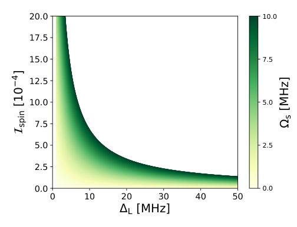
<figcaption class="paper-figure-caption"><b>Fig 5.</b> Figure 4. Error in 2QG implementation due to spin coupling in a chain of three ions. ∆L: laser detuning of the spectator ion. Ωs: Rabi strength on the spectator</figcaption>
</figure>
</div>

<p><strong>Summary.</strong> The paper introduces a novel closed-loop control scheme for two-qubit gates in trapped ion systems, moving beyond simplified open-loop models that fail under noise. By continuously monitoring an ancillary 'spectator ion' and employing reinforcement learning, the system can correct disturbances in real time. This method promises significantly higher gate fidelity with reduced calibration overhead.</p>
<p><strong>Why it may be interesting.</strong> This work represents a significant step toward fault-tolerant quantum computation by addressing environmental noise dynamically. The integration of machine learning (RL) directly into the control loop for physical hardware like trapped ions is highly relevant to modern AMO research.</p>
<details>
<summary>Detailed structure</summary>
<p><strong>Main problem.</strong> The primary goal is to improve the fidelity of two-qubit gates (2QG) in trapped ions by replacing unreliable open-loop control with a real-time, closed-loop feedback mechanism.</p>
<p><strong>Main result.</strong> A proposed Closed-Loop Position Monitoring (CLPM) scheme, utilizing reinforcement learning on a spectator ion's position, is shown to significantly reduce 2QG gate infidelity compared to state-of-the-art methods.</p>
<p><strong>Method.</strong> The approach combines quantum trajectory theory (QTT) with reinforcement learning (RL), where an RL agent learns the optimal control sequence by maximizing a reward function based on the spectator ion's geometric phase.</p>
<p><strong>Model / system.</strong> The system is trapped ions in a linear Paul trap, modeled using a stochastic quantum master equation that accounts for motional drift, thermal effects, and photon scattering. A key addition is monitoring an ancillary 'spectator ion' via fluorescence detection.</p>
<p><strong>Key observables.</strong> Two-qubit gate fidelity ($I$), the geometric phase of the spectator ion ($\chi_{qr}$), and the position/fluorescence signal from the spectator ion.</p>
<p><strong>Important parameters / regimes.</strong> Gate duration ($    au_g$), required precision (e.g., $0.3\Delta x_0$ resolution), and noise sources like motional heating or trap voltage fluctuations ($\delta f$).</p>
<p><strong>Assumptions / limitations.</strong> The feasibility of continuous position monitoring is assumed, and the control system's ability to process real-time feedback from the measured fluorescence signal is central.</p>
<p><strong>Figures summary.</strong> Figures illustrate phase-space trajectories for ion chains under various gate schemes (SotA vs. proposed), showing how closed loops imply minimal residual correlation between electronic states and motional modes.</p>
<p><strong>Paper structure.</strong> The paper progresses by first establishing the limitations of open-loop control, then mathematically modeling the full dynamics using a stochastic master equation incorporating monitoring terms. It details the RL framework for on-the-fly correction, culminating in performance comparisons showing the superiority of the closed-loop approach.</p>
</details>
<details>
<summary>Abstract</summary>
<p>State-of-the-art two-qubit gates with trapped ions employ open-loop control that rely on simplified models to precompute control sequences. Our aim is to introduce closed-loop control for two-qubit gates to correct disturbances as they occur during the gate implementation. We introduce a spectator ion into the ion chain used for quantum logic processing, where it couples with the other ions through collective motional modes. The spectator ion's position is continuously monitored by driving dipole transitions and detecting the resultant fluorescence. We show that incorporating a spectator ion is feasible for linear Paul trap implementations and is expected to reduce the two-qubit gate Bell-state preparation infidelity by an order of magnitude with the deleterious effects of position monitoring being negligible compared to the thermal effects that exist in the system, even in the absence of the spectator ions. Mathematically, we describe driven ion-trap dynamics, including the spectator ion, by a stochastic quantum master equation involving the amplitude-modulation multimode-motional coupling gate, motional drift, thermal effects, recoil from photon scattering, spontaneous decay, and light shift. Our on-the-fly control method employs reinforcement learning with the reward function based on the actual geometric phase of the spectator ion. A key advantage of our approach is that we introduce a control method that involves `learning' and correcting disturbances happening in the trap on-the-fly, thus achieving high-fidelity gates. Our approach will lead to a significantly higher two-qubit gate fidelity at a reduced calibration overhead owing to the small parameter drift in the control system.</p>
</details>
<p><sub><a href="#top">↑ back to top</a></sub></p>

<p><a id="paper-2607.00653"></a></p>
<h3 id="far-field-spatial-coherence-driven-by-lossy-objects-first-principles-approach-unifying-scattering-of-quantum-light-and-thermal-emission"><a href="http://arxiv.org/abs/2607.00653v1">Far-field spatial coherence driven by lossy objects: first-principles approach unifying scattering of quantum light and thermal emission</a></h3>
<p><strong>Authors:</strong> Alessandro Ciattoni<br>
<strong>Type:</strong> theory · <strong>Category:</strong> other · <strong>PDF:</strong> <a href="https://arxiv.org/pdf/2607.00653v1">https://arxiv.org/pdf/2607.00653v1</a><br>
<strong>Analysis basis:</strong> full PDF text, analyzed in chunks
<strong>Topic relevance:</strong> 🔥 <code>interference shaping light</code> <strong>4/5</strong> · <code>Keldysh / 2PI / non-Gaussian methods</code> <strong>3/5</strong> · <code>correlated / nonlocal dissipation</code> <strong>3/5</strong> · <code>methods for driven-dissipative</code> <strong>3/5</strong> · <code>driven-dissipative phase transition</code> <strong>2/5</strong> · <code>non-equilibrium dynamics</code> <strong>2/5</strong> · <code>correlated cavity matter</code> <strong>1/5</strong> · <code>non-equilibrium universality</code> <strong>1/5</strong></p>
<div class="figure-strip-hint">↔ Scroll figures horizontally</div>
<div class="paper-figures-scroll">
<figure class="paper-figure-card">
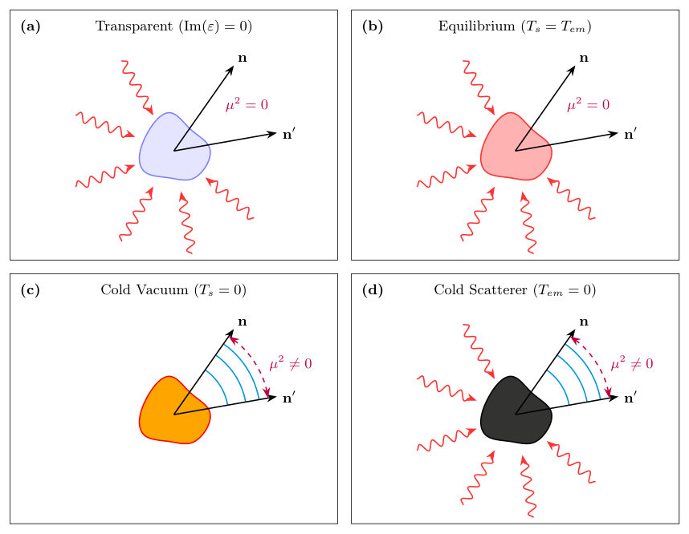
<figcaption class="paper-figure-caption"><b>Fig 1.</b> Figure 1. Schematic illustration of far-field spatial coherence generation under fundamental thermodynamic limits. Wavy lines represent incoherent thermal illumination converging from the surrounding isotropic bath, while linked phase-fronts denote emergent transverse spatial correlations between distinct far-field observation directions (n and n′). (a) Ideally transparent limit: A lossless scatterer merely redirects incoming thermal photons, preserving the completely uncorrelated nature of the ra- diation (µ2 = 0 for distinct directions). (b) Thermal cloaking: At global thermodynamic equilibrium (Ts = Tem), deterministic scattering and intrinsic emission perfectly balance, rendering the...</figcaption>
</figure>
<figure class="paper-figure-card">
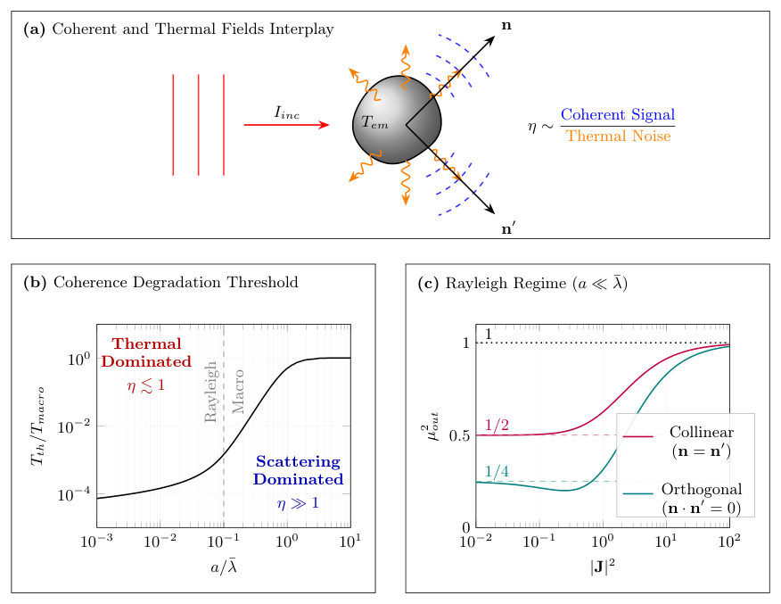
<figcaption class="paper-figure-caption"><b>Fig 2.</b> Figure 2. Degradation of far-field spatial coherence under coherent illumination. (a) Schematic representation of the physical interplay: a deterministic incident laser field (red plane waves) is elastically scattered by an arbitrary dissipative object (blue dashed spherical phase fronts), simultaneously competing with the stochastic intrinsic thermal emission (orange wavy arrows). (b) Thermodynamic phase diagram illustrating the normalized temperature threshold Tth/Tmacro (from Eq. (30)) at which spatial coherence breaks down, as a function of the size parameter a/¯λ for a fixed incident illumination (constant Iinc and ¯ω). The normalizing factor Tmacro represents the asymptotic plateau...</figcaption>
</figure>
<figure class="paper-figure-card">
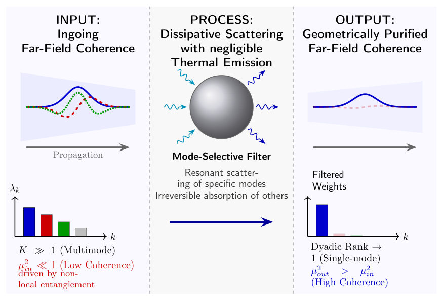
<figcaption class="paper-figure-caption"><b>Fig 3.</b> Figure 3. Geometric purification of spatially entangled light by a dissipative macroscopic scatterer. (Left) The incident continuous-variable state is highly multimode (Schmidt rank K ≫1). The severely reduced macroscopic spatial coherence (µ2 in ≪1) physically manifests as the exact local counterpart of the non-local spatial entanglement. (Center) Operating in a regime where the thermal population at the carrier frequency is sufficiently small to neglect thermal emission, the dissipative object introduces no relevant thermal noise, instead acting as a passive, non-unitary spatial filter (cyan wavy arrows represent the incoming quantum field, while dark blue wavy arrows denote the...</figcaption>
</figure>
</div>

<p><strong>Summary.</strong> The paper presents a first-principles theory unifying the scattering of quantum light with intrinsic thermal emission from dissipative objects using the Modified Langevin Noise Formalism. It shows that far-field spatial coherence results from an algebraic sum of elastic scattering and geometry-driven thermal emission mechanisms. This framework allows for rigorous predictions regarding phenomena like thermal cloaking and coherence degradation in nanostructures.</p>
<p><strong>Why it may be interesting.</strong> This work provides a unified quantum electrodynamic description for light-matter interaction in realistic, lossy media, which is crucial for designing functional components in quantum photonics that must account for unavoidable thermal noise and dissipation.</p>
<details>
<summary>Detailed structure</summary>
<p><strong>Main problem.</strong> To develop a first-principles framework that unifies the scattering of quantum light and intrinsic thermal emission from finite dissipative objects, as far-field spatial coherence is dictated by both processes.</p>
<p><strong>Main result.</strong> The outgoing far-field spatial coherence separates into an algebraic superposition of two geometry-driven mechanisms: elastic scattering (a non-unitary filter) and thermal emission (deriving the van Cittert-Zernike theorem).</p>
<p><strong>Method.</strong> The framework is built upon the Modified Langevin Noise Formalism, analyzing the outgoing far-field correlation dyadic by decomposing it into contributions from incident quantum states and material dissipation.</p>
<p><strong>Model / system.</strong> The system involves an arbitrary dispersive and absorbing magneto-dielectric object interacting with incident quantum light fields. The theoretical foundation uses bosonic operators for both scattering polaritons and localized matter excitations.</p>
<p><strong>Key observables.</strong> Far-field spatial coherence ($\mu^2_{	ext{out}}$), outgoing correlation dyadic $   ext{C}_{    ext{out}}$, and the generalized degree of coherence.</p>
<p><strong>Important parameters / regimes.</strong> Temperature ($T_{em}$), object permittivity/permeability ($\epsilon_\omega, \mu_\omega$), and illumination type (coherent vs. thermal).</p>
<p><strong>Assumptions / limitations.</strong> The analysis assumes a causal linear optical response governed by the material properties and relies on statistical independence between incident and object excitations for factorization.</p>
<p><strong>Figures summary.</strong> Not specified in notes; however, results are presented through derived equations showing coherence dependence on various physical limits (e.g., $\mu^2_{	ext{out}} = 1/2\delta_{n,n'}$ in equilibrium).</p>
<p><strong>Paper structure.</strong> The paper progresses by establishing the theoretical formalism via MLNF, deriving the decomposition of outgoing coherence into scattering and thermal parts, and then analyzing specific physical limits (thermal, coherent, entangled illumination) to demonstrate key phenomena like thermal cloaking.</p>
</details>
<details>
<summary>Abstract</summary>
<p>Far-field spatial coherence dictates the interference properties of scattered light and thermal emission. Traditionally, these phenomena are treated through disjointed paradigms: classical scattering descriptions assume cold objects lacking quantum fluctuations, idealized quantum scattering schemes ignore dissipation, and semiclassical fluctuational electrodynamics relies on phenomenological noise currents, precluding the consistent treatment of incident quantum states. Here, we develop a first-principles framework based on the modified Langevin noise formalism to unify the scattering of quantum light and the intrinsic thermal emission of finite dissipative objects. We demonstrate that the outgoing far-field spatial coherence separates into an algebraic superposition of two geometry-driven mechanisms, coupled by the global unitarity of the radiation-matter dynamics. The first mechanism, elastic scattering, acts as a non-unitary spatial filter, mode-selectively attenuating and reshaping incident quantum correlations. The second mechanism, thermal emission, originates from localized material dissipation and projects the object's absorption profile into the far field, providing a quantum-vectorial derivation of the macroscopic van Cittert-Zernike theorem. Applying this framework across optical regimes, we determine operational bounds for lossy quantum photonics. Under chaotic thermal illumination, we analytically demonstrate thermal cloaking at equilibrium and show that a passive sink casts a structured thermal shadow geometrically identical to a primary emitter. Under coherent illumination, we derive a thermodynamic phase diagram bounding macroscopic phase correlations, demonstrating that subwavelength nanostructures undergo substantial coherence degradation compared to bulk objects. Finally, under spatially entangled illumination...</p>
</details>
<p><sub><a href="#top">↑ back to top</a></sub></p>

<p><a id="paper-2607.00668"></a></p>
<h3 id="spinterface-like-mechanism-of-the-chirality-induced-spin-selectivity-in-donor-chiral-bridge-acceptor-complexes"><a href="http://arxiv.org/abs/2607.00668v1">Spinterface-like mechanism of the chirality-induced spin selectivity in donor chiral-bridge acceptor complexes</a></h3>
<p><strong>Authors:</strong> Subhajit Sarkar, Oliver L. A. Monti, Yonatan Dubi<br>
<strong>Type:</strong> theory · <strong>Category:</strong> other · <strong>PDF:</strong> <a href="https://arxiv.org/pdf/2607.00668v1">https://arxiv.org/pdf/2607.00668v1</a><br>
<strong>Analysis basis:</strong> full PDF text, analyzed in chunks
<strong>Topic relevance:</strong> 🔥 <code>methods for driven-dissipative</code> <strong>4/5</strong> · <code>exotic spin models in light-matter</code> <strong>3/5</strong> · <code>spintronics-quantum-optics interface</code> <strong>3/5</strong> · <code>Kondo &amp; dissipative impurity</code> <strong>2/5</strong> · <code>non-equilibrium dynamics</code> <strong>2/5</strong> · <code>Keldysh / 2PI / non-Gaussian methods</code> <strong>1/5</strong> · <code>correlated / nonlocal dissipation</code> <strong>1/5</strong> · <code>driven-dissipative phase transition</code> <strong>1/5</strong></p>
<div class="figure-strip-hint">↔ Scroll figures horizontally</div>
<div class="paper-figures-scroll">
<figure class="paper-figure-card">

<figcaption class="paper-figure-caption"><b>Fig 1.</b> Figure 1: Schematic depiction for the Donor-chiral-bridge-acceptor (D–χB–A) system within the Hubbard picture. Photoexcitation of the donor (D) injects an elec- tron into the chiral bridge χB (with N = 4), which propagates toward the acceptor-sink (A) with hopping amplitude thop and can recombine back to D. Injection and recombination are described by the Lindblad operators Linj and Lrec, while local spin mixing at the donor-bridge interface is captured by L± 1 (highlighted by the faded yellow spin to denote the spin-flip oper- ator, rather than double occupancy of the donor excited state). The through-bridge current generates an effective interfacial field gµBBeff = α0J (a...</figcaption>
</figure>
<figure class="paper-figure-card">
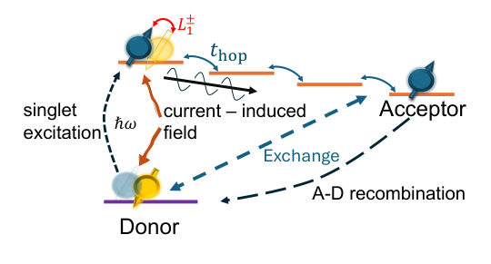
<figcaption class="paper-figure-caption"><b>Fig 2.</b> Fig. 1, the closest scenario to that of Ref. 12. The donor (D) hosts two electronic orbitals</figcaption>
</figure>
<figure class="paper-figure-card">
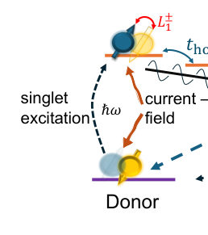
<figcaption class="paper-figure-caption"><b>Fig 3.</b> Fig. 1. The effective Hamiltonian for the donor is therefore Hdonor = X</figcaption>
</figure>
<figure class="paper-figure-card">
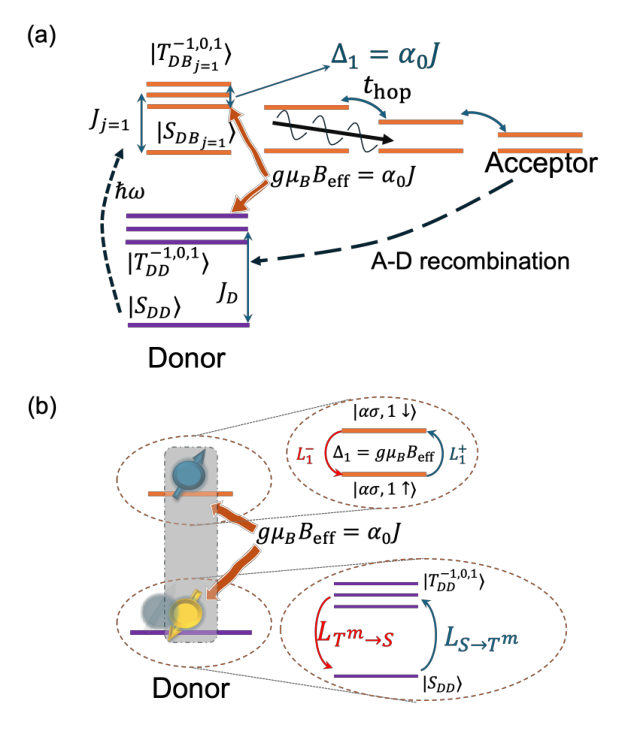
<figcaption class="paper-figure-caption"><b>Fig 4.</b> Figure 2: (a) Schematic of D–χB–A complex in terms of its singlet-triplet state manifold. The bare singlet-triplet gap in the donor is governed by the exchange coupling JD. The same exchange coupling in the donor-bridge manifold is distance-dependent, with Jj being smaller for transfer to a more distant bridge site. (b) Thermalization mechanism at the interface. The current-induced field produces a Zeeman splitting ∆1 = gµBBeff of the single-electron levels on the first bridge site, enabling local spin-flip jumps Lj=1 and L† j=1 between |ασ, 1 ↑⟩and |ασ, 1 ↓⟩. The donor spin couples to bridge spins via exchange Jj SD ·Sj, and donor singlet-triplet interconversion is modeled by the...</figcaption>
</figure>
<figure class="paper-figure-card">

<figcaption class="paper-figure-caption"><b>Fig 5.</b> Figure 3: Spin–polarization vs. effective strength of the solenoid field at different temperatures: Plot of the steady-state spin–polarization P versus the solenoidal-coupling magnitude α0 on a log scale at a fixed mixing rate γm = 0.014thop; curves correspond to four temperatures (see legend).</figcaption>
</figure>
</div>

<p><strong>Summary.</strong> This paper introduces the spinterface mechanism to explain Chirality-Induced Spin Selectivity (CISS) in isolated molecular complexes. Using a Lindblad master equation, the authors show that charge current flowing through the chiral bridge generates an effective magnetic field at the donor interface. This self-consistent field breaks spin degeneracy, enabling robust spin filtering compatible with experimental EPR measurements.</p>
<p><strong>Why it may be interesting.</strong> This work is highly relevant as it models quantum transport in molecular systems using open quantum system techniques (Lindblad master equation) to explain a fundamental solid-state/molecular phenomenon (CISS) through an emergent field effect rather than relying on simple orbital symmetries or external fields.</p>
<details>
<summary>Detailed structure</summary>
<p><strong>Main problem.</strong> The study aims to provide a microscopic explanation for the chirality-induced spin selectivity (CISS) effect in molecular complexes that lack direct metal interfaces.</p>
<p><strong>Main result.</strong> The authors propose and model an intramolecular spinterface-like mechanism, showing it can quantitatively reproduce observed spin polarization signatures in time-resolved EPR studies.</p>
<p><strong>Method.</strong> The research employs a two-electron Lindblad master equation approach to simulate charge transfer dynamics through the chiral bridge.</p>
<p><strong>Model / system.</strong> The system is a Donor–Chiral Bridge–Acceptor (D–χB–A) complex. The model incorporates exchange interactions and treats the spin selectivity generation via an effective solenoidal field generated by the current-carrying electron.</p>
<p><strong>Key observables.</strong> Spin polarization ($P$) measured in time-resolved Electron Paramagnetic Resonance ($   ext{trEPR}$) studies.</p>
<p><strong>Important parameters / regimes.</strong> Solenoidal coupling strength ($\alpha_0$), temperature ($T$), and spin-mixing rates ($\gamma_m$).</p>
<p><strong>Assumptions / limitations.</strong> The mechanism relies on the residual donor electron acting as a localized magnetic moment, generating an effective field without requiring intrinsic spin-orbit coupling on the bridge.</p>
<p><strong>Figures summary.</strong> Figures illustrate the dependence of steady-state polarization ($P$) on parameters like $\alpha_0$ and $T$, showing characteristic growth/saturation curves.</p>
<p><strong>Paper structure.</strong> The paper establishes the problem (CISS without metals), introduces the spinterface mechanism via Hamiltonian modeling, details the Lindblad dynamics including spin mixing and current generation, presents quantitative results matching EPR data, and concludes by unifying the conceptual framework for CISS interpretation.</p>
</details>
<details>
<summary>Abstract</summary>
<p>The chirality-induced spin selectivity (CISS) effect has been invoked to explain recent reports of differences in the time-resolved EPR signals between chiral and achiral molecules. However, the microscopic origin of these differences and their connection to CISS remains contested, particularly since these systems lack a metal interface. Here we introduce an intramolecular spinterface-like mechanism that naturally arises within donor-chiral bridge-acceptor (D--$χ$B--A) complexes and quantitatively reproduces experimentally reported observed spin polarization in time-resolved EPR studies. In our two-electron Lindblad model, the photoexcited charge-transfer electron traversing the chiral bridge exchanges with the residual donor electron, which acts as a localized magnetic moment analogous to an induced magnetic moment on an electrode surface. The resulting through-bridge charge current produces an effective solenoidal field at the donor--bridge interface, breaking spin degeneracy and directional symmetry, thus enabling spin-selective transport without invoking intrinsic spin-orbit coupling on the bridge. We show that the interplay between this current-induced field, donor thermalization (which breaks time-reversal symmetry), and bridge spin mixing yields tens-of-percent polarization over realistic experimental conditions and charge-transfer time scales, matching reported CISS signatures in triads and DNA hairpins. By explicitly resolving the dependence on solenoidal coupling strength, temperature, and spin-mixing rates, the model identifies the regime in which internal spinterfaces can generate robust CISS-like spin filtering. These findings demonstrate that CISS-like signals in isolated D--$χ$B--A complexes are fully compatible with a spinterface mechanism, providing a unified conceptual framework for interpreting both device-based and molecule-internal CISS platforms.</p>
</details>
<p><sub><a href="#top">↑ back to top</a></sub></p>
<hr>
<p>
<a href="index.html">← Index</a>
 · <a href="papers_02.html">Next →</a>
</p>
<hr>

</body>
</html>
